Contact: alfredo.iacoangeli@kcl.ac.uk renato.santos@kcl.ac.uk
This document is best viewed in a web browser.
1 Overview
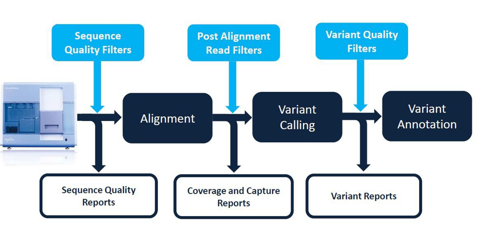
The basic analysis of NGS data for clinical genetics involves the following steps:
- quality control
- alignment (read mapping)
- variant calling
- variant annotation
- variant prioritisation
- reporting
It is essential to assess data quality and performance at each step.
At the end of this workshop you will be able to:
- Use the Galaxy suite of bioinformatic tools
- Assess the quality of raw NGS data in FASTQ format prior to alignment
- Align NGS data to the reference human genome using BWA-MEM
- Describe the contents of FASTQ, SAM and BAM files
- Make an assessment of the alignment process
- Conduct quality control filtering of reads
- Visualise aligned data
- Call variants and conduct quality control filtering and annotation of variants
- Prioritise variants for follow-up/clinical reporting
At the beginning of relevant sections the main software used and its basic input and output formats will be listed.
Work through this workshop at your own pace. Read all sections carefully. If you’re unsure about anything, ask questions. Have fun!
Galaxy is an ongoing project, and bioinformatics tools and software are frequently updated. As a result, some screenshots in this document may not exactly match what you see on the live Galaxy site. Software versions may also differ. Don’t panic. Keep calm. The workflows, pipelines, and tools we use remain the same; there may only be minor differences. Use Galaxy’s search bar to find the tools you need, ask questions, search on Google, and report any bugs or typos.
1.1 Software used in this workshop
1.2 Illumina Sequencing Technology
A short overview of how the Illumina sequencing-by-synthesis (SBS) technology works.
1.2.1 Publications
- Bentley, D. et al., 2008 Accurate whole human genome sequencing using reversible terminator chemistry.
- The seminal paper describing the Illumina sequencing technology (originally developed by Solexa).
- Kircher, M. et al., 2011. Addressing challenges in the production and analysis of illumina sequencing data.
- A practical guide for identifying and mitigating systematic errors and artifacts in Illumina sequencing.
- Nakamura, K. et al., 2011. Sequence-specific error profile of Illumina sequencers.
- This paper shows that specific motifs, particularly inverted repeats and GGC triplets, can alter polymerase activity or cause single-stranded DNA to fold, resulting in reproducible false SNV calls and coverage bias.
- Stoler, N. and Nekrutenko, A., 2021. Sequencing error profiles of Illumina sequencing instruments
- This paper shows the differences between the newer 2-color sequencing systems (MiniSeq, NextSeq, and NovaSeq) and the older 4-color systems (MiSeq and HiSeq), leading to different error patterns.
2 The Workshop Case Study
The sequence data that you will be analysing is from a 3-year-old male who presented with difficulty walking after the first year of life, followed by muscle wasting and weakness, muscle rigidity, developmental delay, progressive vision loss leading to blindness, seizures, impaired swallowing, paralysis, and cognitive decline.
A brain MRI scan showed a “tigroid” (leopard‑skin) pattern within the deep white matter. Further clinical testing suggested a diagnosis of Metachromatic leukodystrophy (MLD, also called Arylsulfatase A deficiency), which is a lysosomal storage disease commonly listed in the family of leukodystrophies as well as among the sphingolipidoses as it affects the metabolism of sphingolipids.
The patient’s exome was sequenced using the paired-end method on an Illumina HiSeq 2500 following target enrichment using the Nextera Rapid Capture Exome and Expanded Exome Enrichment Kits.
This dataset is simulated but represents a realistic clinical scenario.
2.1 Getting the Data
Download the test data from the links provided below.
| File | Description |
|---|---|
| WES01_chr22m_R1.fastq.gz | Illumina FASTQ read 1 |
| WES01_chr22m_R2.fastq.gz | Illumina FASTQ read 2 |
| chr22.genes.hg38.bed | Annotation BED file |
You should now have the files downloaded into a folder that looks something like Figure 2.
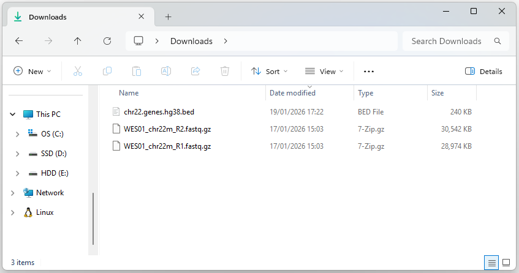
Downloads folder
3 Introduction to Galaxy
You will be using Galaxy to build and run your NGS pipeline. Galaxy is an open source, web-based platform and public servers hosted around the world, allowing scientists to analyse large datasets in a reproducible and collaborative way.
If you are new to Galaxy start here and consult the help resources.
Learning Resources
- Galaxy NGS 101 This page is designed to serve as a comprehensive resource describing manipulation and analysis of NGS data. While it is designed to highlight the utility of Galaxy it will also provide information that is broadly applicable and can be used for teaching of big data biology. It is accompanied by a collection of screencasts.
- Galaxy Training
Getting more help on Galaxy
3.1 Sign in to Galaxy
If you don’t have a Galaxy account, please register at https://usegalaxy.eu/register/start.
Go to https://usegalaxy.eu/login and sign in.
3.1.1 The Galaxy Interface
- The available software can be found in the Tools menu in the left panel.
- The central panel is your working area where you can visualise your data, select tool options and execute jobs.
- Your History is shown in the right hand panel. Here you will see your data, results, and a history of all the software that you have used.
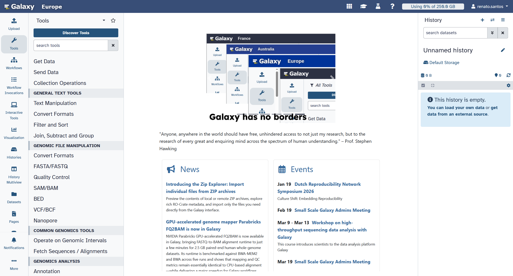
3.1.2 The Galaxy Tools Interface
When a tool is selected, the central panel shows important information related to that tool.
An example is shown in Figure 4. This is for the software Freebayes: a Bayesian genetic variant detector designed to find small polymorphisms, specifically SNPs (single-nucleotide polymorphisms), indels (insertions and deletions), MNPs (multi-nucleotide polymorphisms), and complex events (composite insertion and substitution events) smaller than the length of a short-read sequencing alignment.
In this page, if you scroll down you will be able to find the following:
- Tool name, Galaxy Version, and tool version selector and other Galaxy options
- Tool parameters e.g. set input files, reference genome version, tool specific parameters.
- What it does
- Description
- Galaxy-specific options
- Command-line parameters
- Acknowledgments
- References
Don’t worry about memorising everything on this interface right now, you will become familiar with it as you work through the workshop.
3.2 Start a new Galaxy History
- Ensure you are starting with a new empty history.
- If your history is not empty, click the
+button to create a new history.
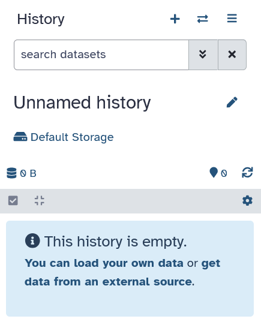
- Click on the
Edit ✎button to rename this history. - Change the name to WES01 NGS Workshop.
- Click the
Savebutton.
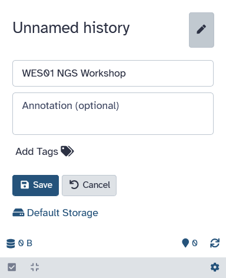
4 Data Upload
- Click on
Upload.
Upload button on the left panel
- On the top bar, above the box to drop files, click on
Collection. - Change the Collection: type setting to
List of Pairs. - Change the Type (set all) to
fastqsanger.gz. - Click
Choose local file.
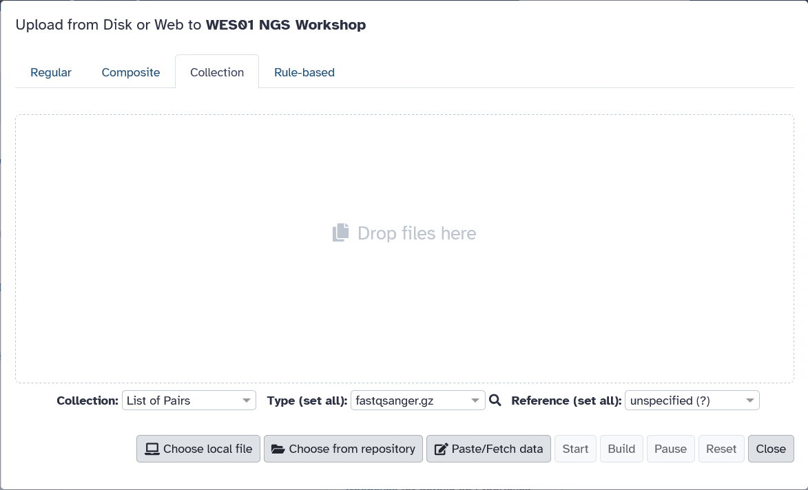
Upload from Disk or Web window
- Navigate to the
Downloadsfolder on your local computer and select the two.fastq.gzfiles and clickOpen.
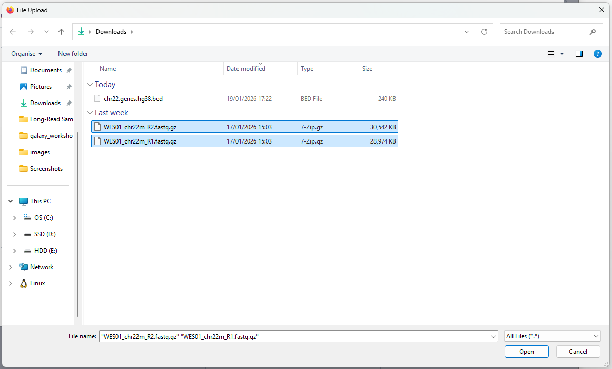
Downloads folder with the two .fastq.gz files highlighted
The files will appear in the Upload from Disk or Web window.
- Click
Startto begin the upload of the files. - Wait until the files are successfully uploaded and the
Buildbutton becomes enabled (it will turn blue). This may take some time, depending on server load. - Click on the
Buildbutton to create a list of pairedfastqfiles.
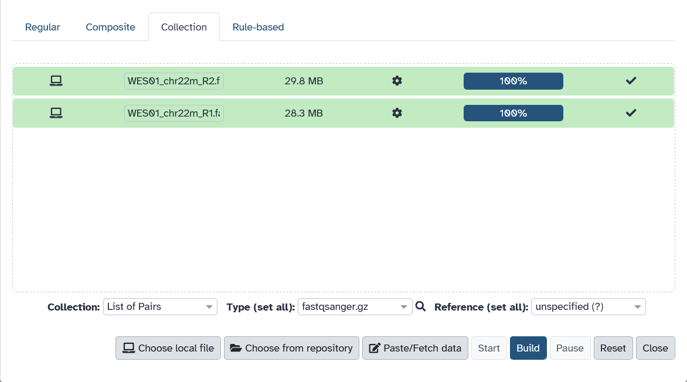
fastq files were uploaded into the Upload from Disk or Web window, and the Build button is now enabled
- Name the collection WES01 fastq.
- Click on
Create collection.
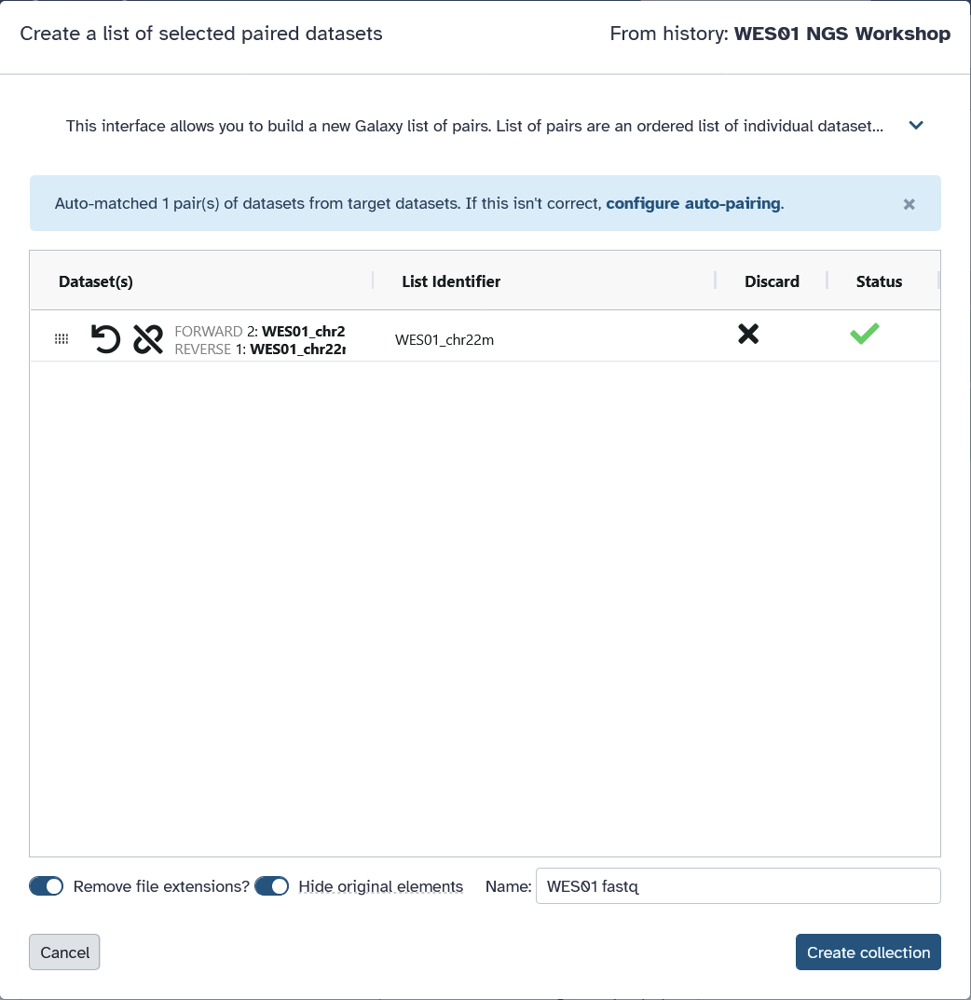
A confirmation window will appear if the files were successfully paired.
- Click
Exiton the confirmation window.
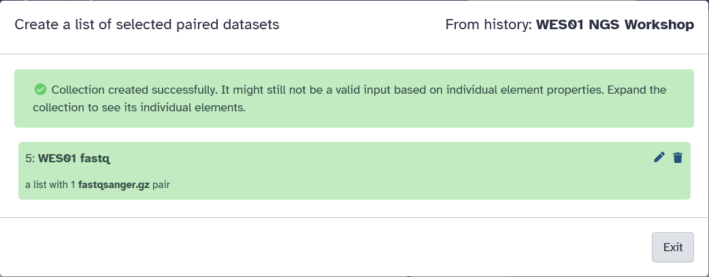
fastq files were paired
- Open the
Upload from Disk or Webwindow again. - On the top bar, above the box to drop files, click on
Regular. - Click
Choose local fileagain and upload thechr22.genes.hg38.bedfile. - Change the file type to
bed. - Change the genome reference to
Human Dec. 2013 (GRCh38/hg38). - Click
Startto begin the upload of thebedfile. - When the file has finished uploading, click
Close.
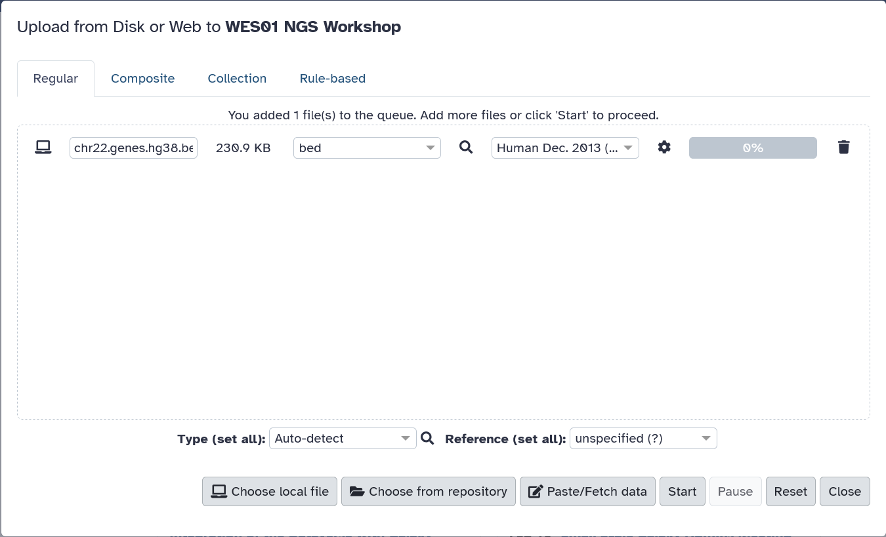
Upload from Disk or Web window
The uploaded data will appear in the History panel on the right.
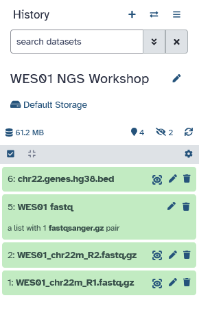
.fastq.gz and .bed files uploaded and ready for analysis.
You can inspect and view the contents of the data uploaded by clicking on the View 👁 button next to the name of each file.
4.1 NGS Data Files and Formats
4.1.1 FASTQ Files
4.1.1.1 Data Format
One lane of paired end sequencing was performed so you have two files of raw sequence data (WES01_chr22m_R1.fastq.gz and WES01_chr22m_R2.fastq.gz) which contain all the sequence data for read 1 (R1) and read 2 (R2) respectively (Figure 15). To save on computing time and disk space, the NGS data for WES01 has been filtered to contain reads mapping to chromosome 22 only and the files have been compressed with gzip (hence the .gz extension).
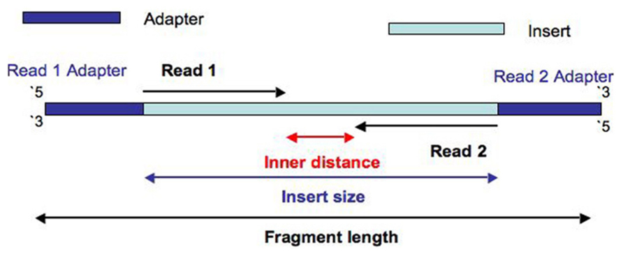
If the insert size is smaller than the sum of the read lengths the paired reads will overlap. Some analysis applications benefit from some overlap between Read 1 and Read 2.
Source: Turner, F.S., 2014. Assessment of insert sizes and adapter content in fastq data from NexteraXT libraries. Frontiers in genetics, 5, p.77572.
The raw NGS data is held in FASTQ format. fastq files are the simplest and most generic way of storing biological sequences and their corresponding quality scores.
A fastq file has four line-separated fields per sequence:
- Line 1 begins with an
@character and is followed by a sequence identifier and an optional description (like a FASTA title line). - Line 2 is the raw sequence letters.
- Line 3 begins with a
+character and is optionally followed by the same sequence identifier (and any description) again. - Line 4 encodes the quality values for the sequence in Line 2, and must contain the same number of symbols as letters in the sequence.
A fastq file containing a single sequence might look like this:
@HWI-D00119:50:H7AP8ADXX:1:1212:10369:36657/1
GCACGTGGGTTCCCAGTAGCAAGAAACTAAAGGGTCGCAGGCCGGTTTCTGCTAATTTCTTTAATTCCAAGACAGTCTCAAATATTTTCTTATTAACTTCC
+
CCCFFFFFHHHHHJJJHIJJJJJJJJJJJJJJJJHFGIIIGJJJJIIHHHHHHFFFFFFFEEEEEEEEEDDDDDDDDDDEDDDDFFEEEDDDDEEEDDEDD4.1.1.2 Illumina sequence identifiers
Sequences from the Illumina instruments use systematic identifiers.
@EAS139:136:FC706VJ:2:2104:15343:197393 1:Y:18:ATCACG| Value | Description |
|---|---|
| EAS139 | the unique instrument name |
| 136 | the run id |
| FC706VJ | the flowcell id |
| 2 | flowcell lane |
| 2104 | tile number within the flowcell lane |
| 15343 | ‘x’-coordinate of the cluster within the tile |
| 197393 | ‘y’-coordinate of the cluster within the tile |
| 1 | the member of a pair, 1 or 2 (paired-end or mate-pair reads only) |
| Y | Y if the read is filtered, N otherwise |
| 18 | 0 when none of the control bits are on, otherwise it is an even number |
| ATCACG | index sequence |
More recent versions of Illumina software output a sample number (as taken from the sample sheet) in place of an index sequence.
For example, the following header might appear in the fastq belonging to the first sample of a batch of samples: @EAS139:136:FC706VJ:2:2104:15343:197393 1:N:18:1
4.1.1.3 Phred Quality Scores
A Phred quality score is a measure of the quality of the identification of the sequence of bases generated by automated DNA sequencing.
A phred score or quality value Q is an integer mapping of p (i.e., the probability that the corresponding base call is incorrect).
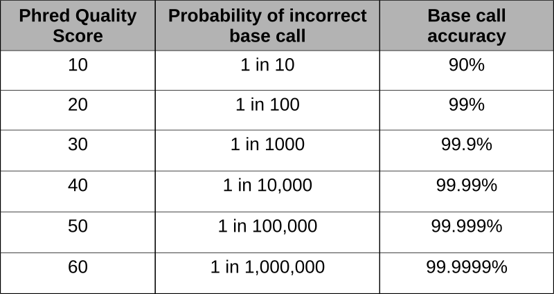
- https://en.Wikipedia.org/wiki/FASTQ_format#Quality
- https://en.Wikipedia.org/wiki/FASTQ_format#Encoding
It is more efficient to store the sequence quality scores as characters because they require less disk space than numbers (i.e. 1 character versus multiple digits). Characters are also more reliable and portable than numbers. Sequence quality scores on the phred scale are determined by mapping the ASCII character to its associated number.
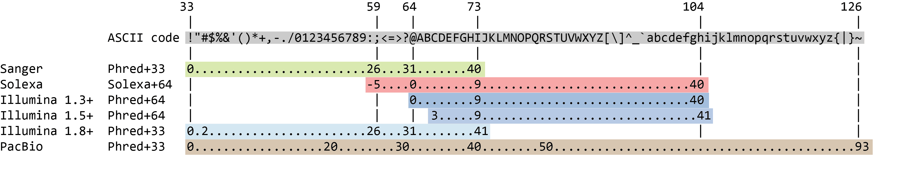
4.1.2 BED Files
The uploaded file chr22.genes.hg38.bed describes the exome sequences and genes that have been targeted in your trial data, stored in .bed format. A BED file is a tab-delimited text file that defines genomic features.
Briefly, the BED format consists of one line per feature, each containing 3-12 columns of data, plus optional feature definition lines. A minimal .bed file uses 3-4 tab delimited columns of data to describe the target:
The first three fields in each feature line are required:
- chrom - Chromosome (e.g. chr3, chrY, chr2_random) or scaffold (e.g. scaffold10671) name
- chromStart - Start coordinate on the chromosome for the sequence considered (this position is zero-based, i.e. the first base on a chromosome is 0).
- chromEnd - End coordinate on the chromosome for the sequence considered; this position is non-inclusive, unlike chromStart (this position is one-based, i.e. the first base on a chromosome is 1)
- name - Name of the feature in that line.
Let’s have a quick look at chr22.genes.hg38.bed
chr22 15721285 15721631 POTEH-chr22-16256332-16256677
chr22 15719659 15719778 POTEH-chr22-16258185-16258303
chr22 15710867 15711034 POTEH-chr22-16266929-16267095
chr22 15708019 15708090 POTEH-chr22-16269873-16269943
chr22 15702685 15702756 POTEH-chr22-16275207-16275277
chr22 15700077 15700215 POTEH-chr22-16277748-16277885
chr22 15698661 15698768 POTEH-chr22-16279195-16279301
chr22 15690025 15690709 POTEH-chr22-16287254-16287937
chr22 15528158 15529137 OR11H1-chr22-16448826-16449804
chr22 16590757 16592810 CCT8L2-chr22-17071648-170737005 Pre-alignment QC
- Software
- falco
- fastp
- Input/Output
- falco input (collection of raw fastq files):
WES01_chr22m_R1.fastq.gzWES01_chr22m_R2.fastq.gz
- falco output:
htmlreport- forward
- reverse
- stats text file
- forward
- reverse
- fastp input (collection of raw fastq files):
WES01_chr22m_R1.fastq.gzWES01_chr22m_R2.fastq.gz
- fastp output (collection of quality filtered fastq files):
WES01_chr22m_R1.fastp.fastq.gzWES01_chr22m_R2.fastp.fastq.gzhtmlreport- stats
JSONfile
- falco input (collection of raw fastq files):
5.1 Extract Read Group Information
- View the
fastqfiles and note the following information:- The unique instrument name
- The run id
- The flowcell id
- The flowcell lane
This information can be obtained from the sequence identifier i.e. line 1 of the first fastq entry.
Header: @HWI-D00119:50:H7AP8ADXX:1:1212:10369:36657/1
| | | |
mapping: 1 2 3 4- The unique instrument name:HWI-D00119
- The run id: 50
- The flowcell id: H7AP8ADXX
- The flowcell lane: 1
For more information on fastq headers please see the Illumina sequence identifiers section.
We will use this information later, during the alignment process, to add metadata, such as read group and run information, to the sample we are analysing.
5.2 Quality assessment of raw sequence data
To assess the quality of the raw sequence data and to guide quality control we will use a program called falco, short for FastQC Alternative Code. The program outputs summary plots and text files that show if there are any problems with the data, which could influence alignment or variant calling if not addressed.
You can learn more about falco here, and the older (and slower) program on which it is based, FastQC here.
- In the Tool Panel select the
Falcotool. - For the
Raw read data from your current historychooseDataset collection(the third button) and then ensure theWES01 fastqcollection is selected. - Click on the
Run Toolbutton to execute the analysis.
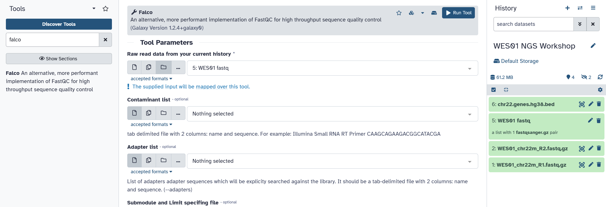
falco tool panel, with the WES fastq file collection selected as input for the tool
The FastQC reports will be shown in the History Pane. Queued jobs are shown in grey with a clock symbol, running jobs in yellow with a buffering symbol, and finished jobs in green, failed jobs in red with a cross.
Depending on server load, it may take a little while for the jobs to start running.
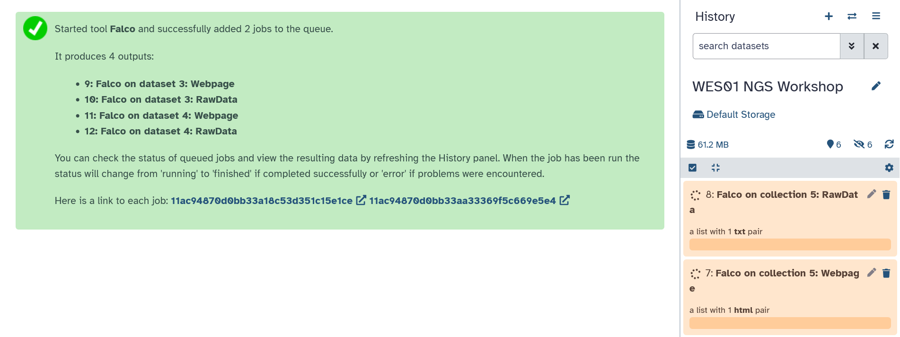
falco jobs submission, with the jobs being shown running on the history panel to the right
- Click on
Falco on collection 5: Webpage, then onWES01_chr22, and then the view button for theforwardandreversefiles to view the respective QC reports.
Use the falco reports from the forward and reverse sequencing data to answer the following questions:
- How many reads do the files contain?
- How long are the reads (bp)?
- Has either file failed any of the sequence quality checks?
5.2.1 Per base sequence quality
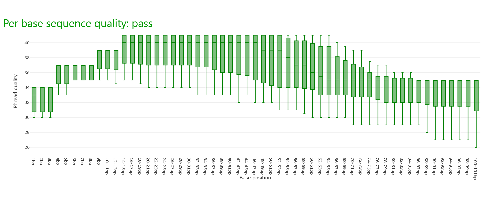
fastq reads (WES01_chr22m_R1.fastq.gz)
Looking at the per base sequence quality for the forward reads you will notice that the average base quality drops towards the end of the reads (Figure 20).
This drop in quality is typical for ensemble-based sequencing by synthesis (SBS) methods, such as Illumina, which add complimentary bases one at a time in a cluster of identical sequences to determine a consensus sequence from the ‘average’ sequence signal over all copies in the cluster.
As nucleotides are added some of the sequences in a cluster grow at a different rate and become desynchronized which reduces the accuracy of the ‘average’ sequence signal (Figure 21).
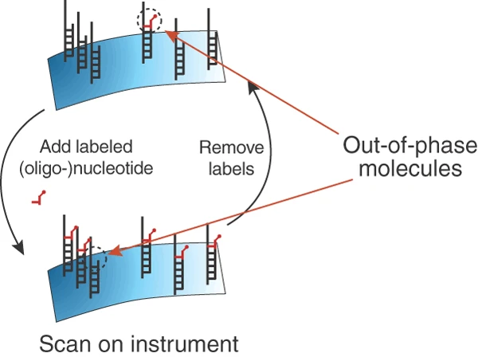
Source: Fuller, C., Middendorf, L., Benner, S. et al. The challenges of sequencing by synthesis. Nat Biotechnol 27, 1013–1023 (2009).
Another particularly important plot is that of ‘Overrepresented sequences’, which lists sequences that account for more than 0.1% of the total. The presence of an overrepresented sequence suggests that the sequence is biologically significant, or that the library is contaminated or has low diversity.
To check for contamination, each overrepresented sequence is compared to a database of common contaminants such as sequencing adapters, which can then be removed from the raw fastq data.
5.3 Read filtering
In a typical analysis you may want to raise technical issues identified by falco, such as low read count, poor quality, and overrepresented sequences with the data provider. To ensure that only data of a certain quality is used for further analysis we will exclude low quality reads.
In paired-end data there are two fastq files per lane of sequencing which are synchronised so that matching pairs are stored in the same line of each file (e.g. the read in line 1, file 1 is paired with the read in line 1, file 2 and so on).
The fastq files need to be joined and the reads have to be analysed and trimmed or removed as a pair. To maintain this order when filtering, we will filter the fastq files using fastp.
- In the Tool Panel select the
fastptool. - For the
Single-end or paired readssection choosePaired collectionand then ensure theWES01 fastqcollection is selected. - Open the
Adapter Trimming Optionssection and enableAdapter sequence auto-detection for paired-end.
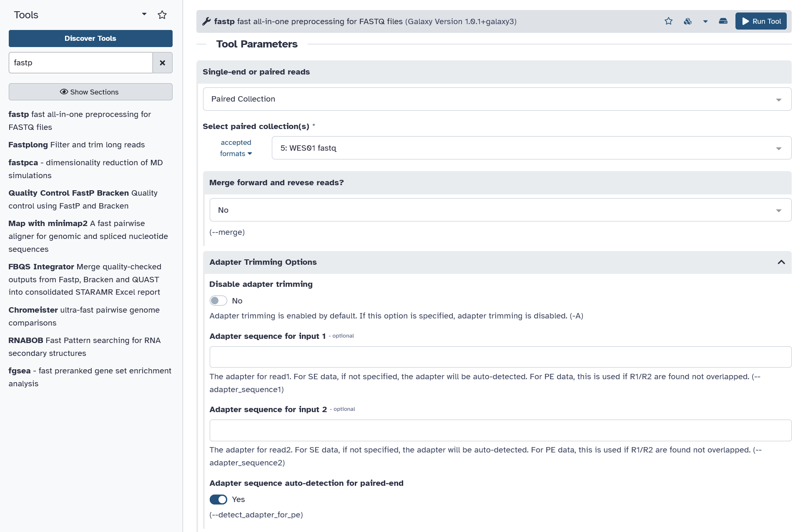
fastp tool panel, with the WES fastq file collection selected as input for the tool, and the option Adapter sequence auto-detection for paired-end enabled
- Open the
Quality filtering options. Note that, by default,fastpwill discard reads where more than 40% of bases have Phred quality of 15 or lower, and reads with more than 5 unknown nucleotides (N). Leave the defaults as is, do not add any values to the boxes.
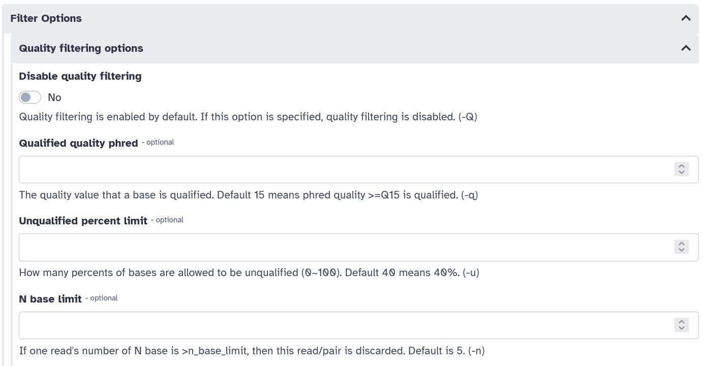
Quality filtering options on the fastp tool panel
- Open the
Length filtering options. Note that, by default,fastpwill discard reads shorter than 15 base pairs. Set theLength requiredparameter to40. This will discard reads shorter than 40 base pairs. - Open the
Read modification options, and thenPer read cutting by quality options. Set the lowerCut by quality in tail (3') (Move a sliding window from front to tail)toYesand ensure theCutting window size for cut rightis set to4andCutting mean quality for cut rightis set to20. - Click on the
Run Toolbutton to execute quality filtering.
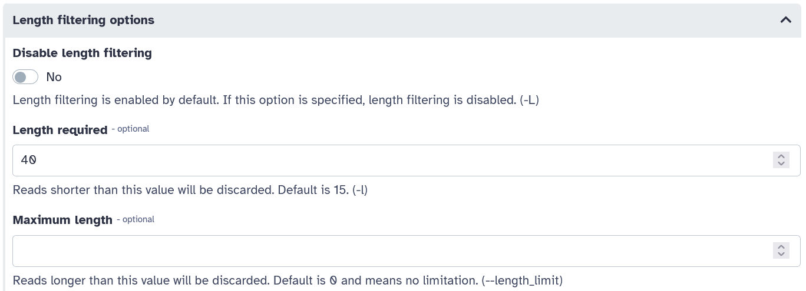
Length filtering options on the fastp tool panel
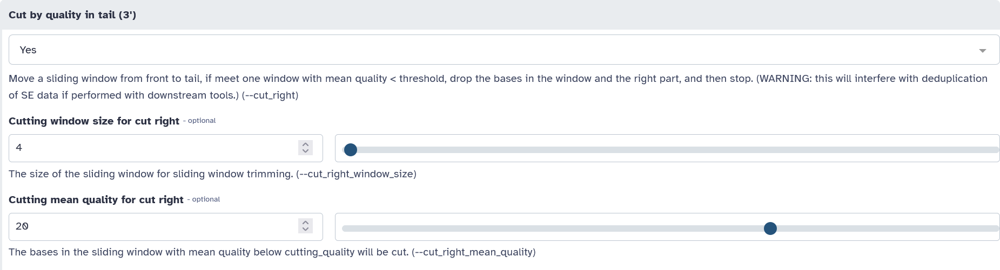
Read modification options on the fastp tool panel
You should now have set up 2 fastp operations:
- Enabled
Adapter sequence auto-detection for paired-end - Discard reads below a specified length (40bp)
We are also using the default fastp quality filtering options, which include discarding reads with more than 40% of bases with less than Q15, and reads with more than 5 N nucleotides.
For paired-end data a particular strength of fastp is that it retains the pairing of reads (from R1 and R2) in the filtered output files.
The two fastq files (R1-paired and R2-paired) contain one read from each pair where both have survived filtering. Additionally, fastp can also output two fastq files (R1-unpaired and R2-unpaired) which contain reads where one of the pair failed the filtering steps, although this is currently not supported by the fastp version on Galaxy.
5.4 Quality assessment of read filtering
- When the
fastp on collection 5: HTML reporthas finished, click on the collection to open it, and then click on theView 👁button to view the report.
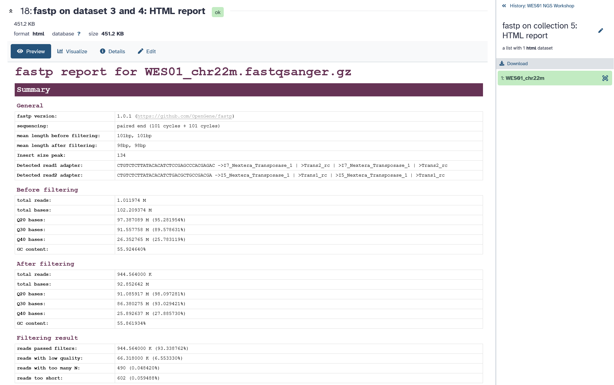
fastp quality filtering report
- Check whether
fastpdetected the adapter sequences automatically, and whether they correspond to the sequences below, which were used in the Nextera Rapid Capture Exome and Expanded Exome Enrichment Kits.
The Nextera adapters used are:
Read1 I7_Nextera_Transposase_1 CTGTCTCTTATACACATCTCCGAGCCCACGAGAC
Read2 I5_Nextera_Transposase_1 CTGTCTCTTATACACATCTGACGCTGCCGACGAAdditional Reference: what sequences do we use for adapter trimming?
If the adapter sequences were not correctly detected by fastp, it means that it could not overlap the forward and reverse reads. Check that you correctly uploaded both the R1 and R2 fastq.gz files.
fastp includes many adapter sequences in its database, but it is not exhaustive. If fastp is not detecting your adapters in a future experiment, you will need to provide the adapter sequencers to the tool so it can trim them correctly.
However, please note that many modern sequencers and basecalling pipelines now perform adapter trimming automatically, so adapters may not always be detected at this stage and may not need to be trimmed.
- Check the quality control results, before and after filtering.
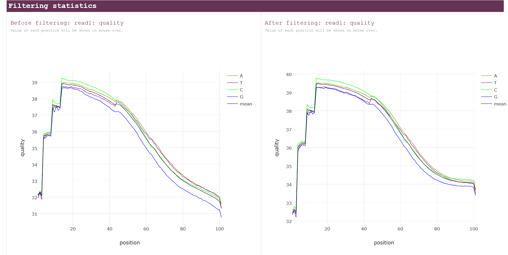
There are other ways to clean up reads more agressively, such as applying stricter filtering criteria, which may be appropriate depending on data quality and analysis requirements. However, these approaches can reduce usable data and should be used with caution.
Use the fastp report to answer the following questions:
- How many reads do the files contain after quality filtering?
- How long are the reads (bp) after quality filtering?
- Have the correct adapter sequences been detected? What are their sequences?
- Is the read quality distribution better?
- Considering the number of reads and bases discarded, do you think a sliding window trimming was necessary? Why or why not?
- For Illumina HiSeq systems, the typical minimum specification for data quality is that >85% to 90% of bases are expected to have a Q30 score or higher. Does this sample pass QC after quality filtering?
6 Alignment
- Software
BWA-MEM
- Input/Output
BWA-MEMinput: Reference Genome and indexes for use with bwa- hg38 reference genome (
fastafile) BWA-MEMindexes (provided by Galaxy):.ambis text file, to record appearance of N (or other non-ATGC) in the reffasta..annis text file, to record ref sequences, name, length, etc..bwtis binary, the Burrows-Wheeler transformed sequence..pacis binary, packaged sequence (four base pairs encode one byte)..sais binary, suffix array index.
BWA-MEMinput (pairedfastqfiles):WES01_chr22m_R1.fastp.fastq.gzWES01_chr22m_R2.fastp.fastq.gz
- hg38 reference genome (
BWA-MEMoutput (aligned sequences file):.bamfile.bai(bamindex: automatically produced by Galaxy)
6.1 Align sequence data to the reference human genome
We will use a program called BWA-MEM (Burrows-Wheeler Aligner) to align the sequence data to the human genome. You can learn more about the BWA program here.
- In the Tool Panel select the
Map with BWA-MEMtool. - For the
Will you select a reference genome from your history or use a built-in index?, ensureUse a built-in genome index is selected, then chooseHuman Dec. 2013 (GRch38/hg38)as the reference genome. - In the section
Single or Paired-end reads, selectPaired Collectionas your data type, then selectfastp on collection 5: Paired-end outputas your data collection.
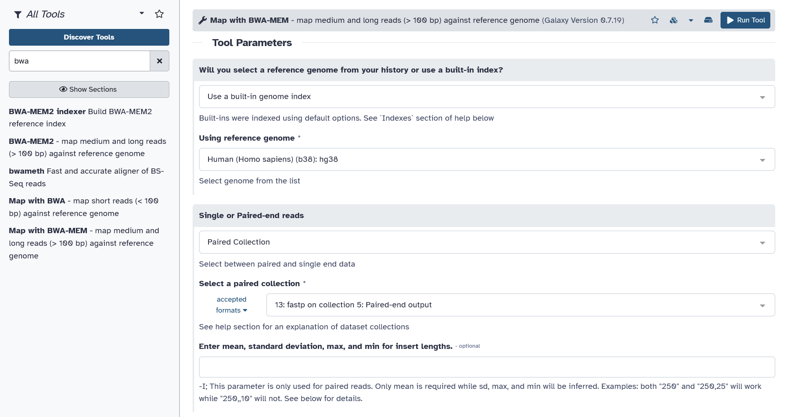
Map with BWA-MEM tool panel
6.2 Set read groups per the SAM/BAM specification
This next step is very important! Please do not skip it.
Please see the Extract Read Group Information section to remember how this information was obtained.
- In the section
Set read groups information?, select the optionSet read groups (SAM/BAM specification). - Enter the following for the options:
- Read group identifier (ID):
HWI-D00119.50.H7AP8ADXX.1.WES01 - Read group sample name (SM):
WES01 - Platform/technology used to produce the reads (PL):
ILLUMINA - Library name (LB):
nextera-wes01-blood
- Read group identifier (ID):
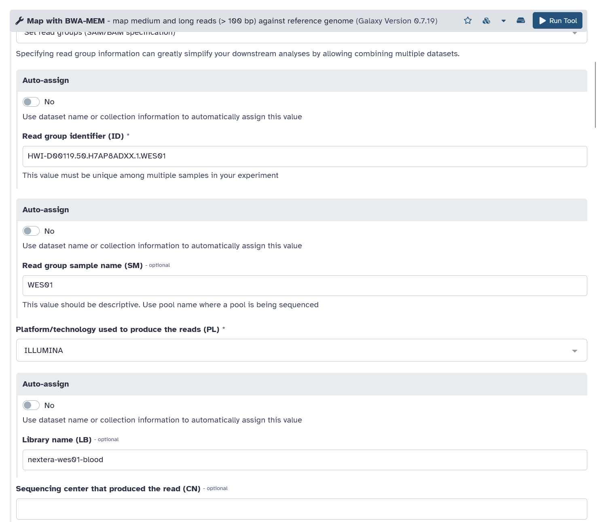
Map with BWA-MEM tool panel
- Continue entering the following options
- Date that run was produced (DT):
2017-02-23 - Platform unit (PU):
H7AP8ADXX.1
- Date that run was produced (DT):
- Click on the
Run Toolbutton to execute the analysis.
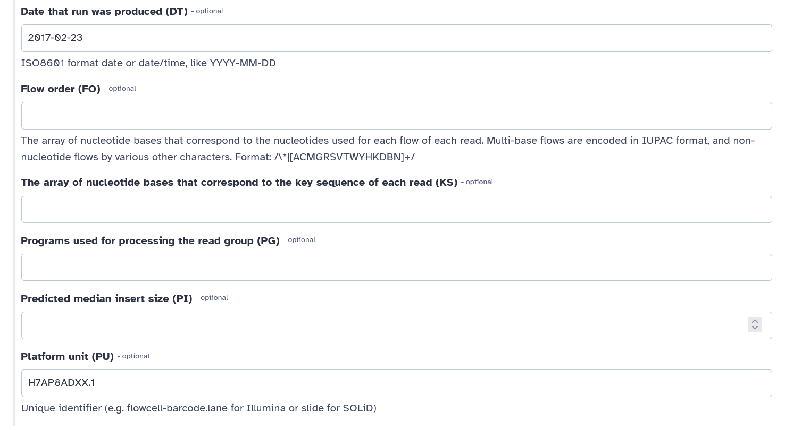
Map with BWA-MEM tool panel
Additional Reference: what are read groups?
6.3 A new NGS Data Format
6.3.1 The Binary Alignment/Map file (BAM)
The alignment process maps the read data to the reference human genome creating a Binary Alignment/Map file (BAM). The bam file is not in text format, so it is not directly viewable. Clicking the view button will open the alignment on IGV (Integrative Genomics Viewer).
Additional Reference: understanding and manipulating SAM/BAM datasets
7 Post Alignment QC and Filtering
- Software
Picard MarkDuplicatessamtoolsbedtoolsmosdepth
- Input/Output
Picard MarkDuplicatesinput:BWA-MEMaligned BAM filePicard MarkDuplicatesoutput: BAM file with duplicate reads flaggedsamtools viewinput: duplicate read marked BAM filesamtoolsview` output: Filtered duplicate read marked BAM file and related bai indexsamtools flagstatinput: Filtered duplicate read marked BAM filesamtools flagstatoutput: text filesamtools idxStatsinput: Filtered duplicate read marked BAM filesamtools idxStatsoutput: text filebedtools coverageBedinput:- Filtered duplicate read marked BAM file
- Target intervals file
.bedfile- chr22.genes.hg19.bed
bedtools coverageBedoutput: text filemosdepthinput: Filtered duplicate read marked BAM filemosdepthoutput: text file
For variant calling, reads with low mapping quality (phred <20), unmapped reads, secondary alignments, reads failing platform/vendor quality checks, and duplicate reads that have the same start and stop position are typically removed or ignored because they can influence genotyping accuracy.
Duplicates originate mostly from DNA library preparation methods that rely on PCR amplification, which can create multiple sequencing reads from the same original DNA molecule (PCR duplicates) and thus artificially inflate read depth and bias allele fractions. Other sources include optical duplicates (sequencing clusters imaged more than once) and platform-specific artefacts.
For example, at heterozygous sites the two alleles should be evenly distributed (50% of reads have the A allele and 50% have the B allele) but if reads with the A allele are duplicated the A allele will become overrepresented and the site might be misinterpreted as homozygous for the A allele.
We will use Picard MarkDuplicates and then samtools view to make a new BAM file which flags duplicate molecules and excludes poor quality reads.
Additional Reference: How PCR duplicates arise in next-generation sequencing
7.1 MarkDuplicates
- In the Tool Panel select the
MarkDuplicatestool. - Select
Dataset collection(the third button) as your data type, then selectMap with BWA-MEM on collection 13 (mapped reads in BAM format)as your data collection. - Leave all other settings on their default options.
- Click on the
Run Toolbutton to execute the analysis.
Picard MarkDuplicates tool panel, with the mapped bam file loaded as input
This tool examines aligned records in the supplied SAM or BAM dataset to locate duplicate molecules. All records are then written to the output file with the duplicate records flagged. Two files are produced, 1) the new BAM file with duplicate reads marked and 2) a metrics file summarising the number of duplicate reads found.
7.2 Filter BAM based on mapping quality and bitwise flags
- In the Tool Panel select the
Filter SAM or BAM, output SAM or BAM files on FLAG MAPQ RG LN or by regiontool. - Select
Dataset collectionas your data type, then selectMarkDuplicates on collection 20: BAMas your data collection. - For
Minimum MAPQ quality scoretype30. - On the section
Filter on bitwise flagselectyes. - Select the following options on
Skip alignments with any of these flag bits set:The read is unmappedThe alignment or this read is not primaryThe read fails platform/vendor quality checksThe read is a PCR or optical duplicate
- Leave all other settings on their default options.
- Click on the
Run Toolbutton to execute the analysis.
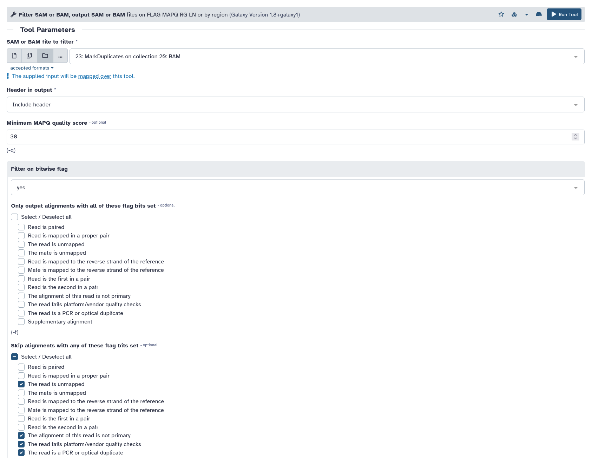
Filter SAM or BAM tool panel, with the duplicate-marked bam file loaded as input, and relevant options set
This tool uses the samtools view command in the samtools toolkit to filter a sam or bam file on the MAPQ (mapping quality), FLAG bits, Read Group, Library, or region.
The input is a bam file, and the output file will also be bam.
7.3 Generating Alignment Statistics
When aligning reads to the reference genome anywhere between 0 to 20% of reads are not aligned due to sequencing errors, sample contamination (e.g. bacterial or viral DNA), gaps in the reference genome and genome variation. Use samtools flagstat to determine how many reads have been aligned. We will compare the duplicate-marked bam file with the final filtered bam file.
- In the Tool Panel select the
Samtools flagstat tabulate descriptive stats for BAM datsettool. - Select
Dataset collectionas your data type, then selectMarkDuplicates on collection 20: BAMas your data collection. - Click on the
Run Toolbutton to execute the analysis. - Run the
Samtools flagstattool again for theFilter SAM or BAM, output SAM or BAM on collection 23: bamdataset.
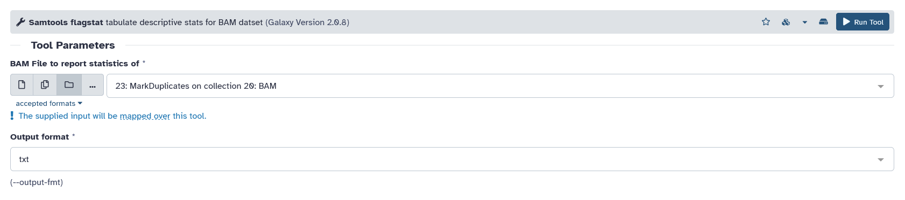
samtools flagstat tool panel, with the duplicate-marked bam file loaded as input
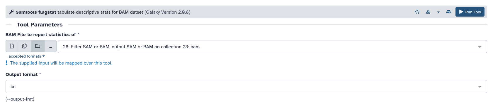
samtools flagstat tool panel, with the filtered bam file loaded as input
Click the view data icon for both and use the Flagstat output to determine the percentage of mapped reads, and calculate the number of reads that were filtered out (difference in total read count between the raw and filtered BAM files).
Before Filtering
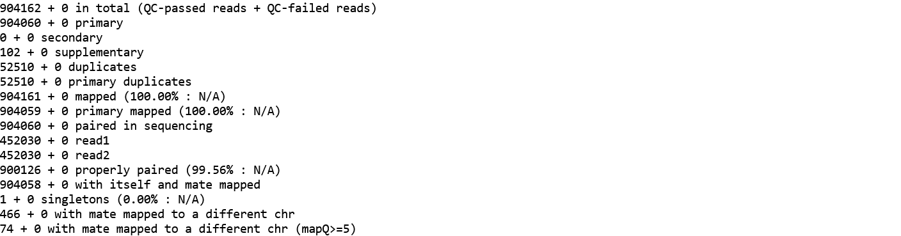
bam file, calculated by samtools flagstat
After Filtering
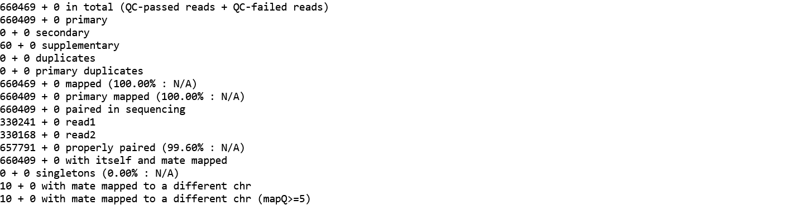
bam file, calculated by samtools flagstat
7.4 Viewing the BAM File
As mentioned above, the bam file is held in binary format and so it can not be viewed directly.
However, the bam file can be converted to a viewable text format known as a SequenceAlignment/Map file or sam file. The sam file format is described in detail here.
Let’s use samtools view to convert the filtered bam file to a sam file so we can view its contents.
- In the Tool Panel select the
Samtools viewtool. - Select
Dataset collectionas your data type, then selectFilter SAM or BAM, output SAM or BAM on collection 23: bamas your data collection. - In the
Output formatselect the optionSAM. - Click on the
Run Toolbutton to execute the conversion. - Click view data to view the SAM file.
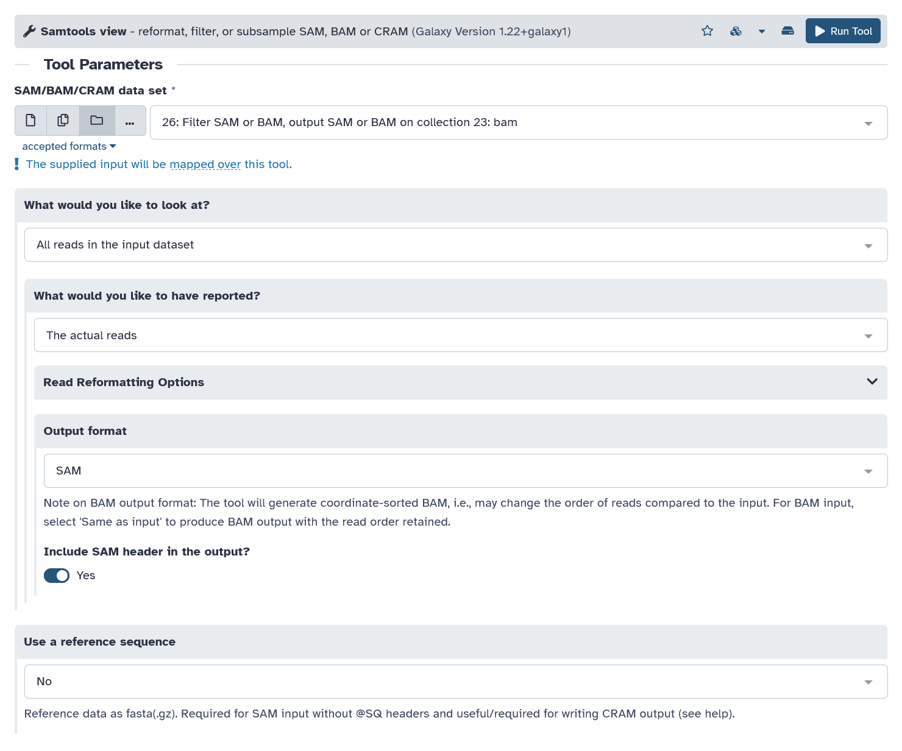
samtools view tool panel with options set to convert the filtered bam file to sam format
- Spend some time inspecting this file and its contents and format.
- Optional. Repeat the conversion step but exclude the SAM header by disabling
Include SAM header in the output?. This will make it easier to view the aligned reads.
7.4.1 The SAM/BAM Format
In the SAM file, lines starting with “@” are headers, and those without “@” are read sequences aligned to the reference.
| SAM_Column | Description |
|---|---|
| QNAME | Query name of the read or the read pair |
| FLAG | Bitwise flag (pairing) |
| RNAME | Reference sequence name |
| POS | 1-Based leftmost position of clipped alignment |
| MAPQ | Mapping quality (Phred-scaled) |
| CIGAR | Extended CIGAR string (operations MIDNSHP) |
| MRNM | Mate reference name (‘=’ if same as RNAME) |
| MPOS | 1-based leftmost mate position |
| ISIZE | Inferred insert size |
| SEQQuery | Sequence on the same strand as the reference |
| QUAL | Query quality (ASCII-33=Phred base quality) |
Please see the following two reads. Note that they both have the same read id. HWI-D00119:50:H7AP8ADXX:1:2202:7515:35573
HWI-D00119:50:H7AP8ADXX:1:2202:7515:35573 99 chr22 16123342 60 101M = 16123407 166 CTACCTCCAGAGCATCAGGCCTTGCCTGGCCCTGGGCAGAGAGCTGGTCTACAACCGGCGGCCTGGGGACGAGGGCACTGTCATGTCTCTAGCTGGGAAAT CCCFFFFFHHHHHIJIJJJIJJJIJIIJIIJJIJIIJJIJJJJIIIJHJJJJJIGGHIGFDDDDDDDDDDDD@BBDDDDDDDDDDCDEDDEDDDDDDDCDD XA:Z:chr14,-19719869,101M,2;chr14,+19855438,101M,2; MD:Z:101 PG:Z:MarkDuplicates RG:Z:HWI-D0011.50.H7AP8ADXX.1.WES01 NM:i:0 AS:i:101 XS:i:91
HWI-D00119:50:H7AP8ADXX:1:2202:7515:35573 147 chr22 16123407 60 101M = 16123342 -166 GGGACGAGGGCACTGTCATGTCTCTAGCTGGGAAATACACATTGAACAACTGGTTGGCAACGTTAACGTTGAGCCAGGCGGGCATGCACGCAACATACTAC B@DDDDDDDDDDDDDDDDDDDDDDEEDEEFFEFFFEEHHHHFHGJJJJJJIIIIJJIIJJIJJJIGGJHEHEGHHFIIJJIJJIJIJJHHHHHFFFFF@B@ XA:Z:chr14,+19719804,101M,2;chr14,-19855503,101M,3;chr2,+132481028,101M,3; MD:Z:101 PG:Z:MarkDuplicates RG:Z:HWI-D0011.50.H7AP8ADXX.1.WES01 NM:i:0 AS:i:101 XS:i:91SAM/BAM Format mapping:
QNAME: HWI-D00119:50:H7AP8ADXX:1:2202:7515:35573
FLAG: 147
RNAME: chr22
POS: 16123407
MAPQ: 60
CIGAR: 101M
MRNM: =
MPOS: 16123342
ISIZE: 166
SEQQuery: GGGACGAGGGCACTGTCATGTCTCTAGCTG…
QUAL: B@DDDDDDDDDDDDDDDDDDDDDDEEDEEF…
Use this website to decode the flags (99 and 147) of the reads and determine which strand of the reference genome they are aligned with.
7.5 Compressing the BAM File
While bam files are already compressed, further compression is possible using the cram format. cram (Compressed Read Alignment Map) is a more efficient file format that compresses alignment data by storing only the differences between the reads and the reference genome, rather than storing the full sequence data.
CRAM files typically achieve 4-10x better compression than BAM files, making them ideal for long-term storage and data transfer. However, CRAM files require the reference genome to be accessible for reading, so the reference sequence must be provided.
- In the Tool Panel select the
samtools viewtool. - Select
Dataset collectionas your data type, then selectFilter SAM or BAM, output SAM or BAM on collection 23: bamas your data collection. - In the
Output formatselect the optionCRAM (-C). - In the section
Use a reference sequence?, selectUse a built-in genomeand then for the reference genome, selectHuman (Homo sapiens): hg38. - Click on the
Run Toolbutton to execute the conversion.
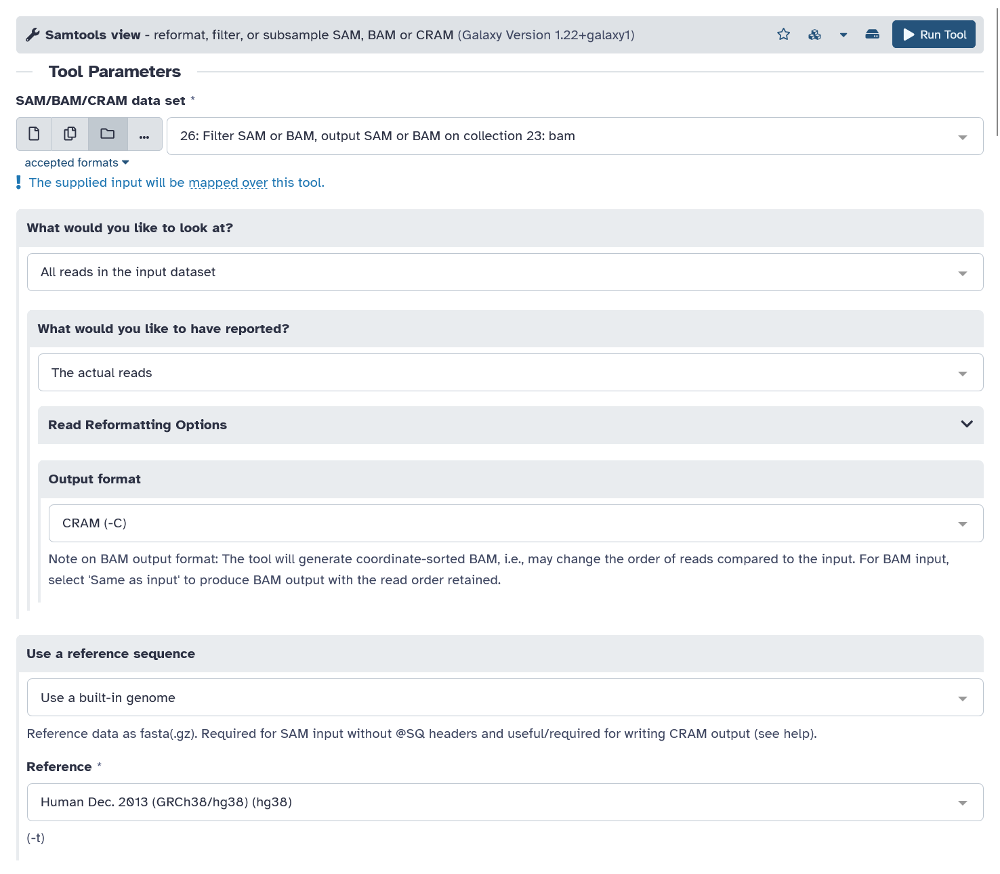
samtools view tool panel with options set to convert the filtered bam file to cram format
Once the CRAM file has been generated, compare the file sizes of the bam and cram files.
- In your History panel, click on the
bamfile dataset and note the file size displayed. - Click on the
cramfile dataset and note the file size displayed. - Calculate the compression ratio: (
bamsize -cramsize) /bamsize × 100%
How much space has been saved by converting to CRAM format?
cram files are particularly useful for large-scale sequencing projects where storage and transfer costs can become significant.
7.6 Generate alignment statistics per chromosome
When viewing the SAM file you may have noticed that not all the reads are mapped to chromosome 22 which is surprising as the sequence was initially filtered for reads mapping to chromosome 22 only. Use the IdxStats to generate a breakdown of the number of reads that map to each chromosome or contig.
- In the Tool Panel select the
Samtools idxstatstool. - Select
Dataset collectionas your data type, then selectFilter SAM or BAM, output SAM or BAM on collection 23: bam, or thecramfile we just generated inSamtools view on collection 26: filtered alignments, as your data collection. - Click on the
Run Toolbutton to execute the analysis. - Click on
Viewwhen the job has finished running.
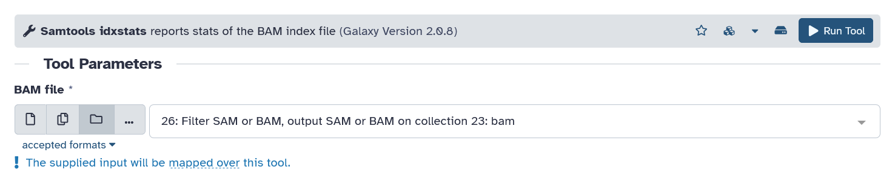
samtools idxstats tool panel
This will produce a file with 4 columns:
- Reference sequence identifier
- Reference sequence length
- Number of mapped reads.
- Number of placed but unmapped reads (typically unmapped partners of mapped reads)
Use the idxStats output to calculate the percentage of reads mapping to chromosome 22.
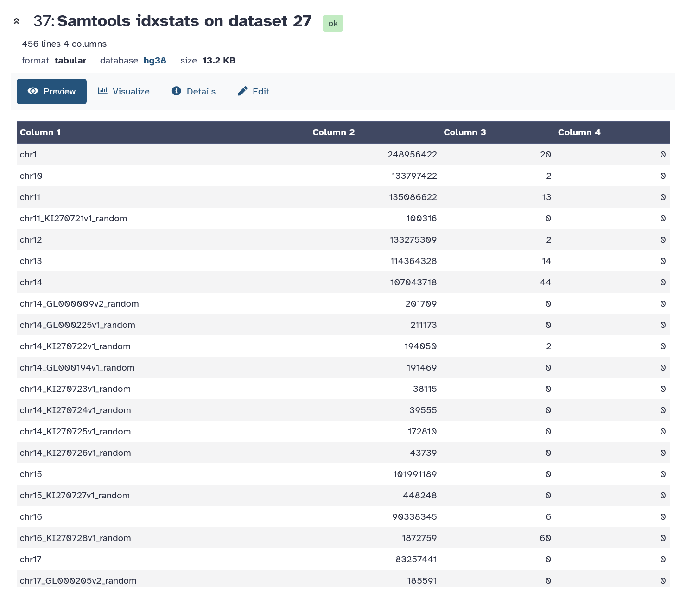
samtools idxstats output
7.7 Determine the distribution of insert sizes
Insert sizes, the region between the 5’ ends of the paired reads (see Figure 41), are important for correct alignment and variant calling. For variant calling, reads are assumed to be independent.
However, if an insert is smaller than the sum of the read pairs the reads will overlap and not be independent in the overlapping region (shown in yellow).
If a PCR error occurs in this overlapping region it will be present in both reads which may result in there being enough evidence to call a variant at this site that is not real.
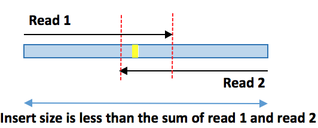
Picard CollectInsertSizeMetrics provides data on the Insert Size, including the parts covered by the reads and the unsequenced gap in the middle.
- In the Tool Panel select the
CollectInsertSizeMetricstool. - Select
Dataset collectionas your data type, then selectFilter SAM or BAM, output SAM or BAM on collection 23: bamas your data collection. - On the section
Use a reference sequenceset it toUse a built-in genomeand the genome reference toHuman Dec. 2013 (GRch38/hg38). - Click on the
Run Toolbutton to execute the analysis.
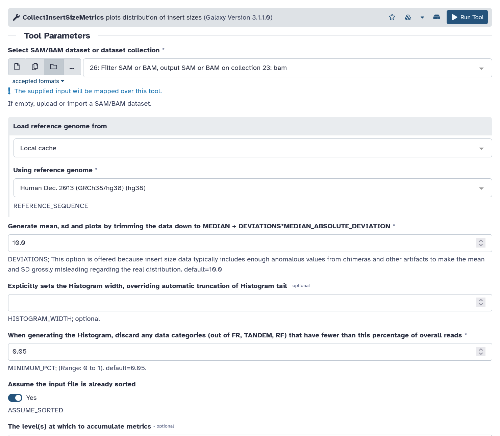
CollectInsertSizeMetrics tool panel with options set
This tool will produce two output files. The first is a tabular output with some metrics and a list of insert sizes and counts. The second output is a .pdf with a insert size histogram, that should look like Figure 43.
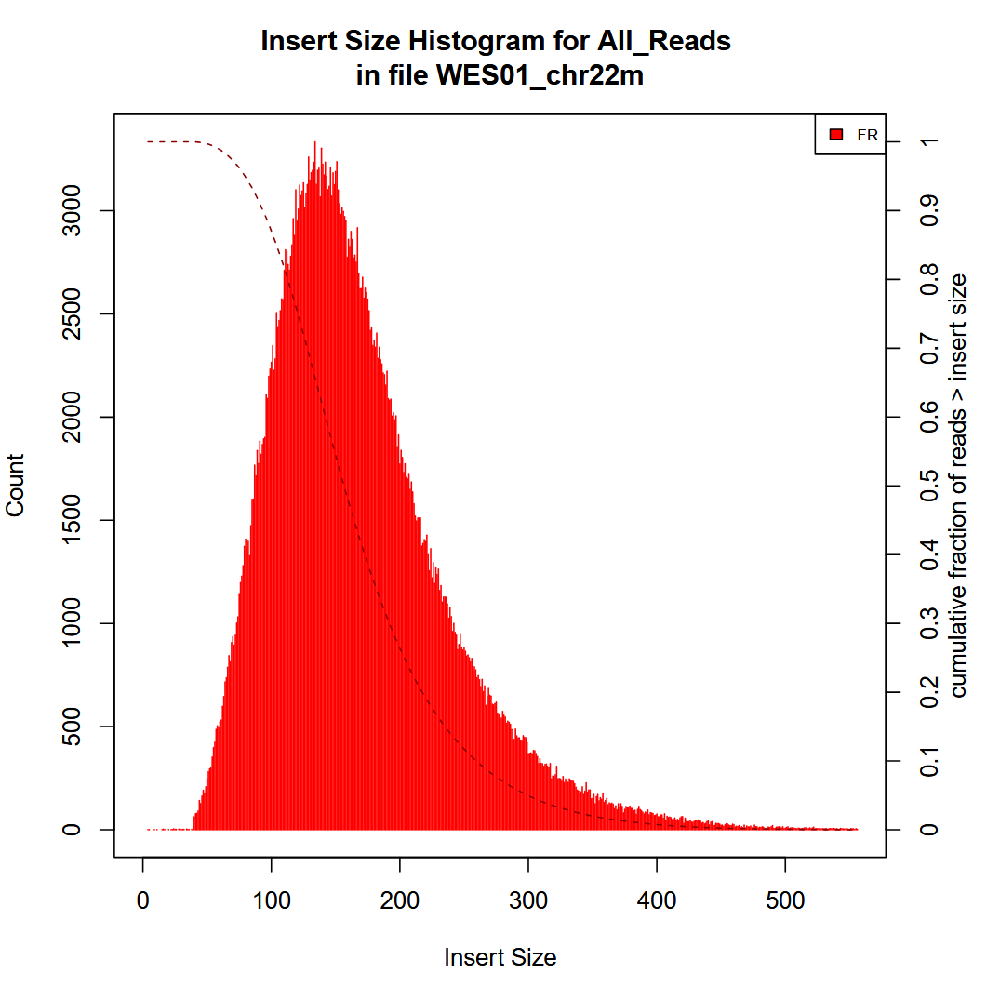
CollectInsertSizeMetrics output histogram, showing the distribution of insert sizes on the aligned reads
The aspects to look out for here depend on the experiment.
In WGS, the goal is uniform coverage, so the ideal insert target range is usually 350bp - 500bp. With 2x100bp reads, a 350bp insert leaves a ~150bp gap between reads, which provides good physical coverage for spanning repetitive regions or detecting deletions.
What to watch out for:
- You want a sharp bell curve, as a tight distribution allows structural variant callers (which rely on deviations from the expected insert size) to work accurately.
- If the histogram is very wide, the library size selection was poor.
- Bimodality (two distinct peaks in the histogram) usually means two different library preps were mixed, or there was a problem with fragment selection during library preparation.
In WES the goal is capturing coding regions efficiently, so the ideal insert target range is lower at around 150bp - 250bp. This is because exome capture probes work best on specific fragment sizes. If fragments are too large, they may overlap into intronic regions, and if they are too small, the probes may not bind well.
What to watch out for:
- If your median is very low (e.g., 130bp), your reads overlap significantly. While you will get high-confidence variant calling in the overlap, the data may generate false positive variants, as seen above (Figure 41), and there was a waste in sequencing capacity, since there was less than 200bp of data per read pair.
- Look at the very left of the histogram. A sharp spike near ~0-30bp often indicates adapter dimers, i.e., empty molecules composed of two adapters joined together without a fragment between them. This wastes sequencing reads with bad data.
- View the tabular output and record the mean insert size and standard deviation.
- Compare the histogram generated on the aligned data by
CollectInsertSizeMetrics, with the histogram generated on the raw sequencing data byfastp. Why are there differences between the two plots?
7.8 Depth of Coverage
Identification and accuracy of variant calling relies on the depth and breadth of sequence coverage. To calculate coverage, a file in bed format describing the target region is required. Bed files use tab delimited columns of data to describe the target: chromosome, left location (bp), right location (bp).
7.8.1 Calculate depth per base
We will use the uploaded bed file which describes the exome sequence that has been targeted in your trial data chr22.genes.hg38.bed.
The options we selected will report the per-base of coverage for each feature in the bed file.
- In the Tool Panel select the
bedtools Compute both the depth and breadth of coveragetool. - Switch the tool software version to
2.22.1. - For the
Count how many intervals in this BED/VCF/GFF/BAM file (source)section selectDataset collectionas your data type, then selectFilter SAM or BAM, output SAM or BAM on collection 23: bamas your data collection. - For the
overlap the intervals in this BED file (target)select thechr22.genes.hg38.bedfile. - Enable the option
Report the depth at each position in each B feature. - Click on the
Run Toolbutton to execute the analysis.
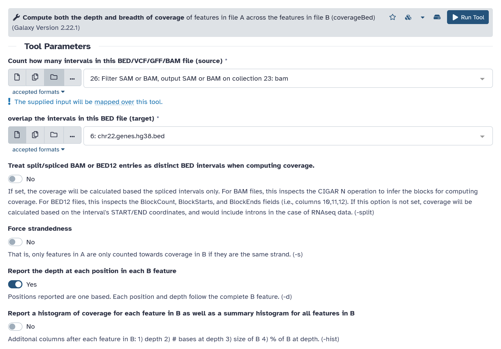
bedtools Compute both the depth and breadth of coverage version 2.22.1 tool panel with options set
The output will consist of a line for each one-based position in each feature, followed by the coverage detected at that position.
The 6th (last) column is the Depth at position X (Column 5) for the genomic feature (exon) A (columns 1-4).
Note that the order in column 5 is not numerical or in order. This is a quirk of bed files’ sorting.
chr22 15528158 15529137 OR11H1-chr22-16448826-16449804 1 23
chr22 15528158 15529137 OR11H1-chr22-16448826-16449804 10 33
chr22 15528158 15529137 OR11H1-chr22-16448826-16449804 100 65For line 1: the depth at the first base (indicated by col 5) of the feature/exon OR11H1-chr22-16448826-16449804 is 23. For line 2: the depth at the 10th base (indicated by col 5) of the feature/exon OR11H1-chr22-16448826-16449804 is 33. For line 3: the depth at the 100th base (indicated by col 5) of the feature/exon OR11H1-chr22-16448826-16449804 is 65.
7.8.2 Correct the sort order
- In the Tool Panel select the
Sort data in ascending or descending ordertool. - For the
Sort Querysection selectDataset collectionas your data type, then selectCompute both the depth and breadth of coverage across collection 26as your data collection. - In
Column selections, Click+ Insert Column Selectionstwice. - Add
Sort on Column 2Leave all the other options as they are. - Add
Sort on Column 5Leave all the other options as they are. - Click on the
Run Toolbutton to execute the analysis.
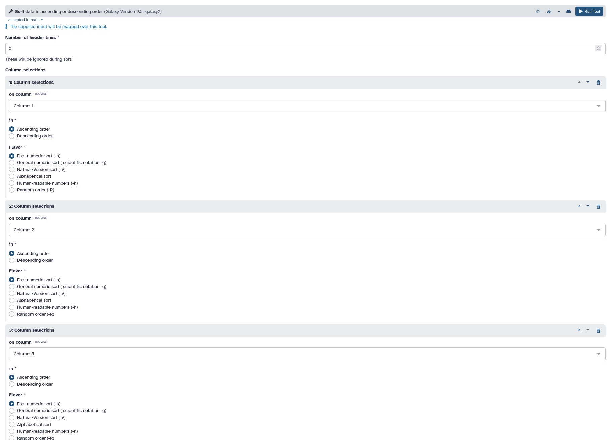
Sort data in ascending or descending order tool panel with options set
- View the new sorted data. It should look like Figure 46.
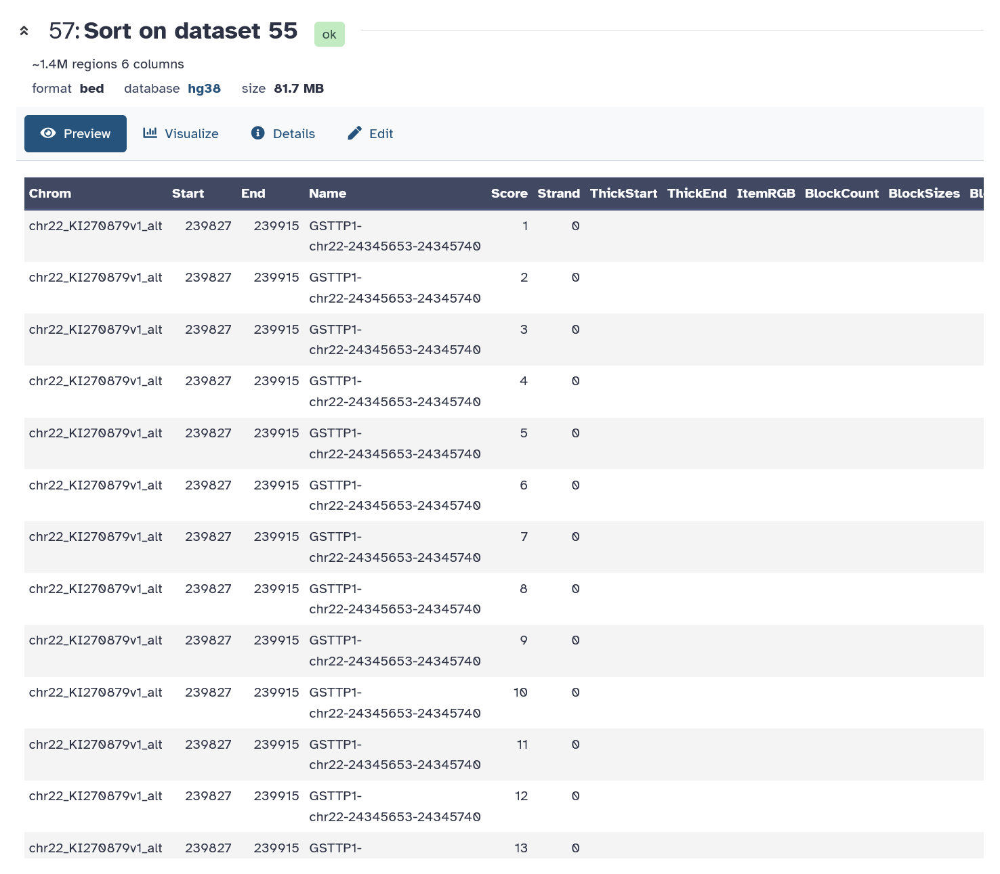
7.8.3 Targeted Regions Mean Coverage
We can calculate the mean coverage of the targeted regions by averaging over the values in column 6.
- In the Tool Panel select the
Summary Statisticstool. - For the
Summary statistics onsection selectDataset collectionas your data type, then selectSort on collection 54as your data collection. - Set
Column or expressiontoc6. - Click on the
Run Toolbutton to execute the analysis.
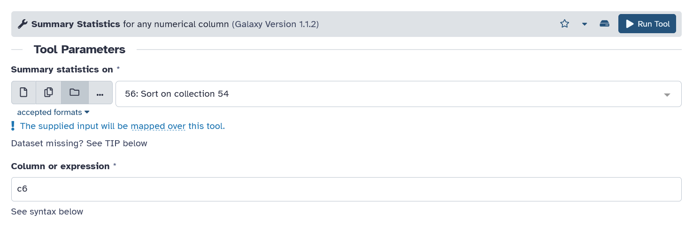
Summary Statistics tool panel with options set
- View the data. It should look like Figure 48.
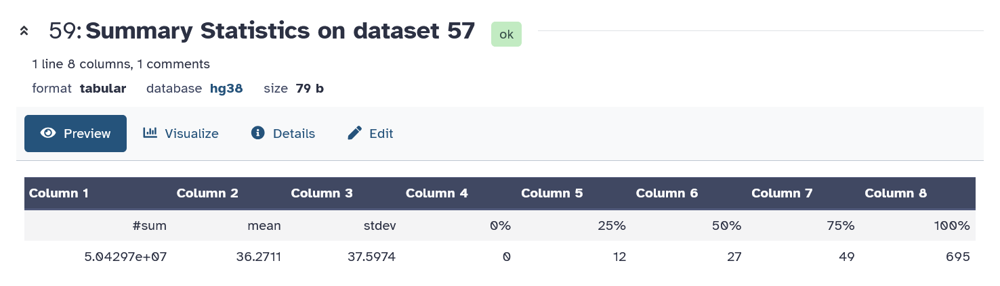
bed file
7.8.4 Depth of coverage by chromosome
What is the average depth of coverage across the entirety of chromosome 22?
To quickly and efficiently calculate this value, we will be using the mosdepth tool.
- In the Tool Panel select the
mosdepthtool. - Select
Dataset collectionas your data type, then selectFilter SAM or BAM, output SAM or BAM on collection 23: bamas your data collection. - Click on the
Run Toolbutton to execute the analysis.
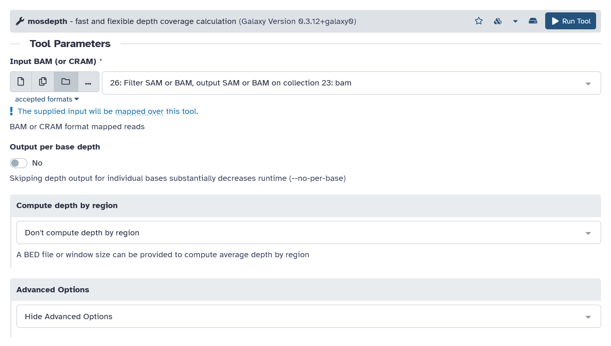
mosdepth tool panel with options set
- View the
mosdepth summaryfile to see the coverage of depth calculated by chromosome. It should look like Figure 50.
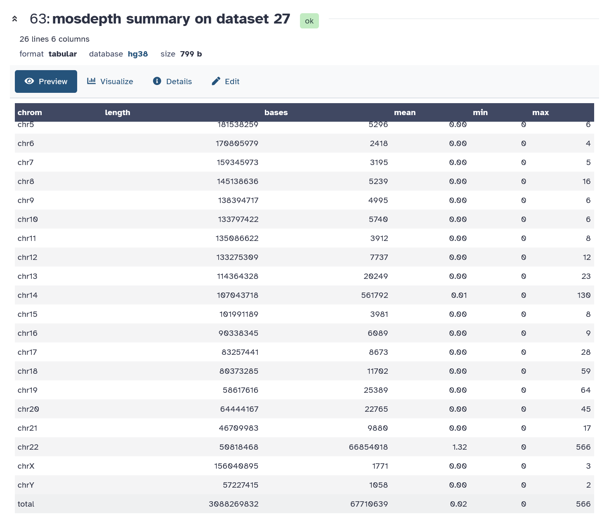
Use the mosdepth report to answer the following questions:
- What is the mean depth of coverage across the entire chromosome 22?
- What is the mean depth of coverage across the entire genome?
8 Visualising Alignments
- Software
IGV
- Input/Output
IGVinput:bamandbaifile- reference genome (IGV provided)
- optional additional files
- vcf from variant calling
- bed files (gene annotations)
IGVoutput:- Interactive visual display of data
8.1 Integrative Genomics Viewer (IGV)
It is useful to look at the aligned data as this is one way to identify variants, assess their quality, and determine their genomic context with respect to other annotated features of the human genome such as genes, repeat sequences, transcription factor binding sites etc. We therefore recommend alignment visualisation before validation of in-silico variants by independent sequencing methods.
The Integrative Genome Viewer (IGV) is a popular tool for interrogating aligned NGS data (look here for more details on IGV: www.ncbi.nlm.nih.gov/pubmed/22517427).
You can run IGV on its Web App. Don’t worry if you accidentally close Galaxy. Your files will remain saved as long as you don’t delete them.
8.2 Viewing the BAM File
- Navigate to your filtered
bamdata setFilter SAM or BAM, output SAM or BAM on collection 23: bamand open the panel. - Download the
Datasetand thebam_index. - Rename the
bamfile tofiltered.bam, and thebaiindex tofiltered.bam.bai.
The bam and bai file names should not have special characters for the files to be read successfully by IGV.
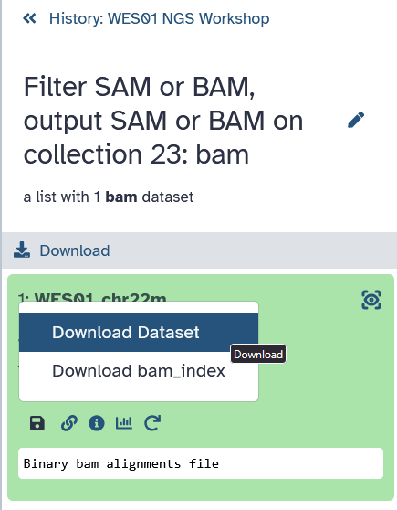
bam file and index from the history panel
- Open the IGV Web App, and ensure the reference genome is set to
hg38, on the top left corner. You can change it in theGenomedrop-down menu if you are currently on a different build. - Click on the
Tracksdrop-down menu, and click onLocal File.... - Select the
filtered.bamandfiltered.bam.baifiles to import the alignment track to IGV.
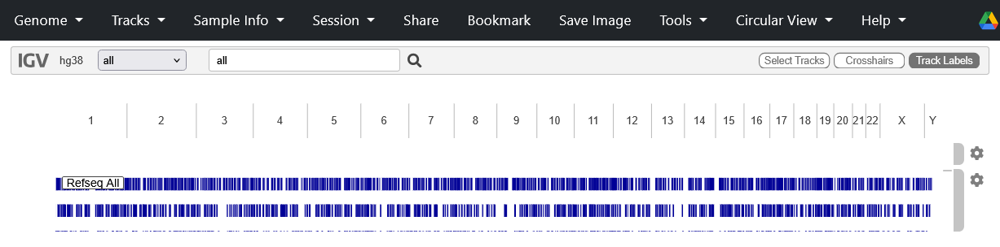
8.3 Viewing the Gene NF2
- Enter
NF2in the search box and click enter to go to this gene. We can now see data for the whole gene as a coverage profile in the upper track and individual reads below.
NF2 is a tumour suppressor gene that regulates cell cycle, growth and differentiation. An inactivating germline mutation in exon 1 of SMARCB1 has been reported in patients with NF2-related Schwannomatosis. Schwannomas are mostly benign tumours involving schwann cells that myelinate the axons of nerve cells but can cause problems if the tumour compresses a nerve. There are several cases where people with schwannomatosis have developed hearing loss due to an acoustic neuroma, which is a schwannoma on the vestibular nerve in the brain that is involved in hearing.
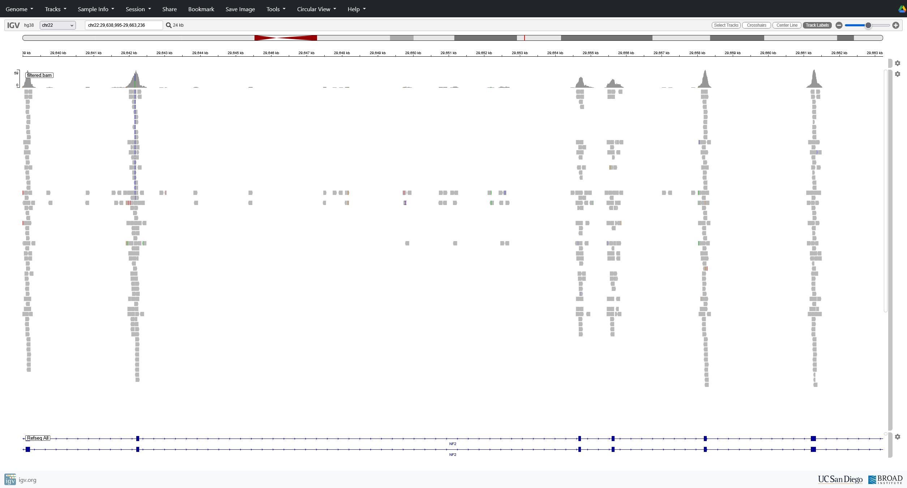
NF2 on IGV
What does the coverage look like? Are all exons equally captured?
Zoom in on an exon and get familiar with IGV and viewing the BAM file.
8.4 A Variant in NF2
- Enter the location
chr22:29,642,163in the search box to focus on the data for a particular variant. You can now see the coloured bar consists of two colours representing the two alleles and their height corresponds with the allele frequency. - Right click and select sort alignments by base.
- Mouse over the coverage track for the SNV at
chr22:29,642,163and look at the information IGV displays.
NF2 on IGV
9 Variant Calling
- Software
freebayesbcftools
- Input/Output
freebayesinput:- Filtered duplicate read marked BAM file
- Reference Genome hg19 (fasta file, provided by galaxy)
freebayesoutput:- vcf file
bcftools viewinput: vcf filebcftools viewoutput: filtered vcf file
Accurate and consistent variant calling requires statistical modelling and is essential for the clinical implementation of NGS. However, many programs are available for calling variants and their concordance varies. Furthermore, variants have different levels of confidence due to differences in data quality.
For variants with intermediate confidence levels, it is difficult to separate true variation from artefacts that arise from many factors such as sequencing error, misalignment and inaccurate base quality scores. As a result, the evidence for variant calls requires scrutiny and caution should be used when interpreting positive and negative findings especially for indels which are more error prone.
At the end of this exercise you will be able to:
- Use a state of the art software (
freebayes) to call small variants (SNVs and indels) - Describe the contents of variant call files
- Generate and interpret basic variant quality control parameters
- Use quality control filters to exclude or flag variants with low confidence
Additional Reference: Finding variants
9.1 Freebayes
Freebayes is a Bayesian genetic variant detector designed to find small polymorphisms, specifically SNPs (single-nucleotide polymorphisms), indels (insertions and deletions), MNPs (multi-nucleotide polymorphisms), and complex events (composite insertion and substitution events) smaller than the length of a short-read sequencing alignment.
- In the Tool Panel select the
freebayestool. - Select
Dataset collectionas your data type, then selectFilter SAM or BAM, output SAM or BAM on collection 23: bamas your data collection. - On the section
Using reference genome, selectHuman Dec. 2013 (GRch38/hg38). - Click on the
Run Toolbutton to execute the analysis.
freebayes tool panel with options set
Freebayes uses short-read alignments (BAM files with Phred+33 encoded quality scores, now standard) for any number of individuals from a population and a reference genome (in FASTA format) to determine the most-likely combination of genotypes for the population at each position in the reference. It reports positions which it finds putatively polymorphic in variant call file (VCF) format. It can also use an input set of variants (VCF) as a source of prior information, and a copy number variant map (BED) to define non-uniform ploidy variation across the samples under analysis.
9.2 Viewing the VCF
View the VCF file created by freebayes and familiarise yourself with the variables by reading the comments in the header section.
This history panel shows: 7,044 variants and 516 comments (Figure 56).
The comments appear at the top of the VCF file (lines begin with a ‘#’ character) and explain the format of the info and sample columns.
vcf file output from freebayes
Freebayes emits a standard VCFv4.2 output stream. This format is designed for the probabilistic description of allelic variants within a population of samples, but it is equally suited to describing the probability of variation in a single sample.
Of primary interest to most users is the QUAL field, which estimates the probability that the site is polymorphic (i.e. carries an alternate allele). In freebayes, this value can be understood as 1 - P(locus is homozygous reference, given the data). It is recommended that users use this value to filter their results, rather than accepting anything output by freebayes as ground truth.
vcf file output from freebayes
9.3 Filtering the VCF
By default, VCF records are output even if they have very low probability of variation, in expectation that the VCF will be filtered.
- In the Tool Panel select the
bcftools view VCF/BCF conversiontool. - Select
Dataset collectionas your data type, then selectFreeBayes on collection 26 (variants)as your data collection. - On the section
Restrict to, add the following filtering expression toInclude:QUAL > 1 && QUAL/INFO/AO > 10 && SAF > 0 && SAR > 0 && RPR > 1 && RPL > 1 - Set the
output_typetouncompressed VCF. - Click on the
Run Toolbutton to execute the analysis.
bcftools view tool panel with options set
The Freebayes Information Fields we used for filtering
QUALprobability that there is a polymorphism at the loci described by the record: 1 - P(locus is homozygous given the data).AOAlternate allele observations, with partial observations recorded fractionally.SAFNumber of alternate observations on the forward strand.SARNumber of alternate observations on the reverse strand.RPLReads Placed Left: number of reads supporting the alternate balanced to the left (5’) of the alternate allele.RPRReads Placed Right: number of reads supporting the alternate balanced to the right (3’) of the alternate allele.
What calls do we “know” are poor (w.r.t. freebayes VCFannotations)? 1. Low-quality calls (QUAL < N) - Variants with low overall quality scores - Additionally, cases where QUAL is high but QUAL/AO (quality per observation) is low 2. Low read depth (DP < N) - Loci with insufficient sequencing coverage 3. Strand bias issues - AF > 0 & SAR > 0: Ensures alternate alleles are seen on BOTH forward and reverse strands - Removes variants only observed on one DNA strand (likely artifacts) 4. Read placement bias - RPL > 0 & RPR > 0: Ensures reads supporting the variant are balanced on both sides
Suggested freebayes hard filters for diploid Humans
QUAL > 1 && QUAL/INFO/AO > 10 && SAF > 0 && SAR > 0 && RPR > 1 && RPL > 1
- QUAL > 1: removes horrible sites
- QUAL / AO > 10 : additional contribution of each obs should be 10 log units (~ Q10 per read)
- SAF > 0 & SAR > 0 : reads on both strands
- RPR > 1 & RPL > 1 : at least two reads “balanced” to each side of the site
Additional Reference: freebayes in depth: model, filtering, and walkthrough
Look at the filtered vcf file. How many variants are there after filtering?
| Before | After |
|---|---|
10 Variant Annotation and Prioritisation
- Software
VEP(Variant Effect Predictor)
- Input/Output
VEPinput:- vcf file
- annotation databases
VEPoutput:- annotated vcf file
- text file with annotations
At this point in the analysis of whole exome data from patient WES01, we have assessed the quality of raw sequence data, removed low quality reads, aligned sequence data to the reference genome, removed poorly mapped reads and duplicate reads, assessed the alignment process, called variants and evaluated variant calling. The aim of this practical is to complete the analysis of WES01 by annotating the variants and using a filtering strategy to generate a short-list of potentially pathogenic variants. At the end of this exercise you will be able to:
- Use
VEPto annotate variants with respect to genes, databases of normal variation, and predictors of pathogenicity - Apply basic variant filters to generate a list of candidate genes and likely causative variants
- Use phenotype information to improve annotation, filtering and prioritisation of likely causative variants
10.1 Annotating variants
The result of variant calling is a variant call file (VCF) which describes the location and data quality of each variant. However, the initial VCF file does not provide any information about the functional relevance of variants and their potential contribution to disease. To gain these insights we will use VEP (McLaren et al 2016) to annotate each variant in the VCF file with respect to their location in relation to genes and coding sequences (exon, intron or intergenic), whether they change the coding sequence and if so how (missense, stop gain, synonymous, frameshift, amino acid consequence etc). In addition, we will cross reference the variants with databases of known variation (1000 genomes, dbSNP, Exome Sequencing Project and COSMIC) and predictions of functional significance (avsift and conservation scores).
At this stage, it is important to be aware that the annotation result will vary according to the choice of annotation software (alternative software: SnpEff Cingolani et al 2012; and ANNOVAR Wang et al 2010) and definition of transcripts (Ensemble Flicek et al 2012, RefSeq Pruitt et al 2012, Gencode Harrow et al 2012).
This variability occurs because a single variant may have different effects in different transcripts (isoforms of the gene) and in some cases may effect different genes (genes can overlap, one on forward strand the other on the reverse strand) each with multiple transcripts. It is also possible to interpret a single variant as having multiple effects on a single transcript.
The annotation software must therefore apply a set of rules to determine which variant takes precedence (see here for the ANNOVAR precedence rules) but these rules vary between programs so that they generate different results.
For example, the overall agreement for Loss of Function (LoF) variants annotated by ANNOVAR and VEP is just 64% (McCarthy et al 2014: Choice of transcripts and software has a large effect on variant annotation).
The variant is an insertion of an A in a stop codon (TGA) in the penultimate base of the exon in all transcripts except one. It is possible to interpret this variant as a frameshift insertion or a stop-loss but it is actually a synonymous variant because the stop codon remains in the same place.
The choice of which transcript set to use for annotation has an even bigger effect on the annotation results. For example, the overlap between LoF variants is only 44% when the same software is used to annotate against transcripts from Ensembl or RefSeq (McCarthy et al 2014). This is because RefSeq transcripts are based on a collection of non-redundant mRNA models that have strong support and are manually curated.
As a result, the RefSeq database is highly accurate but does not contain all possible transcripts or gene models (n=41,501 transcripts from RefSeq release 57 that were used by ANNOVAR). In comparison, Ensembl provides a less curated but more comprehensive list of transcripts (n=115,901 transcripts from Ensembl version 69 that were used by ANNOVAR) based on information from the Consensus Coding Sequence (CCDS, Pruitt et al 2009), Human and Vertebrate Analysis and Annotation (HAVANA), Vertebrate Genome Annotation (Vega, Ashurst et al 2005), ENCODE (The ENCODE Project Consortium 2012) and GENCODE (Searle et al 2010).
10.2 VEP (Variant Effect Predictor)
VEP is a rapid, efficient tool to annotate functional consequences of genetic variation from high-throughput sequencing data. VEP also provides easy and intuitive web-based access to the most popular functionalities of the software.
VEP will annotate variants using specified gene annotations, regions, and filtering databases. Input is a VCF dataset, and output is a table of annotations for each variant in the VCF dataset or a VCF dataset with the annotations in INFO fields.
- In the Tool Panel select the
Predict variant effects with VEPtool. - In the section
Select source of annotation data, selectAny VEP cache file. - Select
Dataset collectionas your data type, then selectbcftools view on dataset 51as your data collection. - Select
Homo sapiens hg38 (V106)as the cache file andHuman Dec. 2013 (GRch38/hg38)as the reference genome.
VEP tool panel with main options set- On the section
Output options, set the following options:- Output SIFT prediction -
Both - Output PolyPhen prediction -
Both
- Output SIFT prediction -
VEP tool panel with Output options set
- On the section
Identifiers, enable the followingIdentifier flags:- Add HGVS nomenclature, both coding and protein sequence names, to the ouput (requires FASTA)
- Add the gene symbol (e.g. HGNC) (where available) to the output
- Add a flag indicating if the transcript is the canonical transcript for the gene
- Add a flag indicating if the transcript is the MANE Select or MANE Plus Clinical transcript for the gene (only for hg38)
- Output the biotype of the transcript or regulatory feature
- On the section
Co-located variants, enable the followingCo-located variants flags:- Report all known clinical significance values at the given locus (instead of allele-specific)
- Add the global allele frequency (AF) from 1000 Genomes Phase 3 data for any known co-located variant to the output (–af)
- Report the highest allele frequency observed in any population from 1000 genomes, ESP or gnomAD
- On the section
Filtering and QC options, enable the followingFiltering and QC flags:- Only return consequences that fall in the coding regions of transcripts
- Click on the
Run Toolbutton to execute the analysis.
VEP tool panel with Identifier flags set
- On the section
Co-located variants, enable the followingCo-located variants flags:- Report all known clinical significance values at the given locus (instead of allele-specific)
- Add the global allele frequency (AF) from 1000 Genomes Phase 3 data for any known co-located variant to the output (–af)
- Report the highest allele frequency observed in any population from 1000 genomes, ESP or gnomAD
- On the section
Filtering and QC options, enable the followingFiltering and QC flags:- Only return consequences that fall in the coding regions of transcripts
- Click on the
Run Toolbutton to execute the analysis.
VEP tool panel with Co-located variants flags and Filtering and QC flags set
10.2.1 Variant Effect Prediction algorithms
If you’re running out of time to finish the workshop you can read the section below in your own time and skip to the last section on how to create a workflow.
Below you can see outlined different prediction algorithms used by variant prediction software.
SIFT predictions SIFT predicts whether an amino acid substitution affects protein function based on sequence homology and the physical properties of amino acids. Only available in popular species. For both SIFT and PolyPhen Ensembl VEP can report either a score between 0 and 1, a prediction in words, or both.
Polyphen-2 Polyphen-2 predicts the impact of an amino acid substitution on the structure and function of a protein. Predictions are based on features that characterise the substitution including the sequence (does the substitution occur within an annotated site in the protein e.g. active or binding site, non-globular region such as trans-membrane etc), phylogenetics (how often does the substitution occur in a family of related proteins) and structural information (could the substitution affect the proteins 3D structure e.g. hydrophobic core, electrostatic interactions, interactions with ligands or other important features). These features are assessed by a probabilistic classifier. Two versions of Polyphen are available, HDIV and HVAR, that used different datasets to train and test the prediction models. HDIV should be used for evaluating rare alleles involved in complex phenotypes where both disease causing and mildly deleterious alleles are treated as damaging. The HDIV dataset consists of all damaging alleles in the UniProtKb database that effect molecular function and cause human Mendelian diseases versus differences between human proteins and their closely related mammalian homologues which are assumed to be non-damaging.
HVAR should be used for diagnostics of Mendelian diseases which requires distinction between mutations with diagnostic effects from all remaining human variation, including a wealth of mildly deleterious alleles. The HVAR dataset used to train and test Polyphen consisted of all human disease causing mutations from UniProtKb together with common human non-synonymous SNPs (MAF>1%) without annotated involvement in disease which were treated as non-damaging.
LRT score Likelihood ratio test (LRT) for prediction of significantly conserved amino acid positions within the human proteome. Mutations are estimated as ‘deleterious’ that disrupt highly conserved aminoacid residues, ‘neutral’ or ‘unknown’.
Mutation Taster MutationTaster uses a Bayes classifier to predict the disease potential of an alteration. For this prediction, the frequencies of all single features for known disease mutations/polymorphisms were studied in a large training set composed of >390,000 known disease mutations from HGMD Professional and >6,800,000 harmless SNPs and Indel polymorphisms from the 1000 Genomes Project.
Mutation Assessor Mutation assessor scores estimate functional impact based on evolutionary conservation of the affected amino acids in protein homologs. The method has been validated on a large set (60k) of disease associated (OMIM) and polymorphic variants.
FATHMM score Functional Analysis through Hidden Markov Models. Predicts the functional effects of protein missense mutations by combining sequence conservation within hidden Markov models (HMMs), representing the alignment of homologous sequences and conserved protein domains, with “pathogenicity weights”, representing the overall tolerance of the protein/domain to mutations.
RadialSVM Support vector machine (SVM) based ensemble prediction score, which incorporates 10 scores (SIFT, PolyPhen-2 HDIV, PolyPhen-2 HVAR, GERP++, MutationTaster, Mutation Assessor, FATHMM, LRT, SiPhy, PhyloP) and the maximum frequency observed in the 1000 genomes populations. Larger value means the SNV is more likely to be damaging. Scores range from -2 to 3 in dbNSFP.
LR score LR scores evaluate the deleteriousness of missense mutations by using logistic regression to integrate information from:
- function prediction scores (PolyPhen-2, SIFT, MutationTaster, Mutation Assessor, FATHMM, LRT, PANTHER, PhD-SNP, SNAP, SNPs&GO, and MutPred)
- conservation scores (GERP++, SiPhy and PhyloP)
- ensemble scores (CADD, PON-P, KGGSeq and CONDEL)
- maximum minor allele frequency
VEST3 score Variant Effect Scoring Tool (VEST) is a supervised machine learning-based classifier for prioritisation of rare missense variants with likely involvement in human disease. The VEST classifier training set comprised ~ 45,000 disease mutations from the latest Human Gene Mutation Database release and another ~45,000 high frequency (allele frequency >1%) putatively neutral missense variants from the Exome Sequencing Project. VEST estimates variant score p-values against a null distribution of VEST scores for neutral variants not included in the VEST training set. These p-values can be aggregated at the gene level across multiple disease exomes to rank genes for probable disease involvement.
CADD raw Combined Annotation Dependent Depletion (CADD) is a framework that integrates multiple annotations into one metric by contrasting variants that survived natural selection (differences between 1000 Genomes and the Ensembl Compara inferred human-chimpanzee ancestral genome) with simulated mutations. Raw CADD scores come straight from the model and have no absolute unit of meaning and are incomparable across distinct annotation combinations, training sets, or model parameters. However, raw values have relative meaning with larger scores indicating that a variant is more likely to have a damaging effect.
CADD phred Phred CADD scores are ranked scores based on the whole genome CADD raw scores. For example, variants at the 10th-% of raw CADD scores are assigned to CADD-10, top 1% to CADD-20, top 0.1% to CADD-30, etc. The results of this transformation are Phred-like scaled CADD scores.
Genomic Evolutionary Rate Profiling Rejected Substitution scores (GERP RS). GERP identifies constrained elements in multiple alignments by quantifying substitution deficits for SNPs. Scores range from -12.3 to 6.17, with 6.17 being the most conserved. Scores greater than 2 provide a high sensitivity while still strongly enriched for truly constrained sites.
PhyloP46way placental Phylogenetic conservation score based on a multiple alignment of 46 vertebrate genomes (10 primates, 33 placental mammals).
PhyloP100way vertebrate Phylogenetic conservation score based on a multiple alignment of 100 vertebrate genomes.
SiPhy 29way logOdds The estimated stationary distribution of A, C, G and T at the site, using SiPhy algorithm based on 29 mammals genomes.
10.3 Filtering and Prioritisation of variants
There are many ways to filter the variants. One of the most common strategies is to select coding variants that are either rare or absent from databases of known variation such as 1000 Genomes and gnomAD and predicted to be damaging by in-silico tools.
- In the Tool Panel select the
bcftools split-veptool. - Select
Dataset collectionas your data type, then selectPredict variant effects on collection 52as your data collection. - On the section
Select INFO annotation to parse, insertCSQ. - On the section
Enter fields to be extracted, listed either as indexes or names, insert-(a single dash). This tellsbcftoolsto split allVEP-generated fields existent in thevcffile. - On the section
Enter prefix of INFO annotations to be created after splitting the CSQ string (optional), insertVEP_. - On the section
Select transcripts to extract by type and/or consequence (optional), insertworst. This automatically picks the single most severe consequence for each variant (e.g., prioritizes Missense over Intronic), which is essential for prioritising variants. - Set the
output_typetouncompressed VCF. - Click on the
Run Toolbutton to execute the analysis.
bcftools split-vep tool panel with options set
Now let’s convert the vcf file into a tabular format, so it is easier to read.
In the Tool Panel select the
bcftools querytool.Select
Dataset collectionas your data type, then selectbcftools split-vep on collection 65as your data collection.On the section
Query options, insert the query below onFormat for Output.%CHROM\t%POS\t%VEP_SYMBOL\t%VEP_Feature\t%VEP_HGVSc\t%VEP_HGVSp\t%VEP_Consequence\t%VEP_IMPACT\t%VEP_CLIN_SIG\t%VEP_Existing_variation\t%VEP_AF\t%VEP_MAX_AF\t%VEP_PolyPhen\t%VEP_SIFT\t%VEP_CANONICAL\t%VEP_MANE_SELECT\n
Enable
Output is tab-delimited.Click on the
Run Toolbutton to execute the analysis.
bcftools query tool panel with options set
Here is a breakdown of what each column represents in your output file.
| Col | Field | Description |
|---|---|---|
| 1 | CHROM | Chromosome name (e.g., chr1, X). |
| 2 | POS | Genomic coordinate (1‑based position). |
| 3 | VEP_SYMBOL | Official gene symbol (HGNC), e.g., BRCA1, TP53. |
| 4 | VEP_Feature | Transcript ID (usually Ensembl ENST…); -s worst shows the most severe transcript. |
| 5 | VEP_HGVSc | Coding DNA change (e.g., c.152A>G). |
| 6 | VEP_HGVSp | Protein change (e.g., p.Lys51Arg or p.L51R); empty if non-coding. |
| 7 | VEP_Consequence | Consequence type (e.g., missense_variant, stop_gained). |
| 8 | VEP_IMPACT | VEP severity: HIGH, MODERATE, LOW, MODIFIER. |
| 9 | VEP_CLIN_SIG | ClinVar significance (pathogenic, likely_pathogenic, benign, etc.). |
| 10 | VEP_Existing_variation | dbSNP rsID (e.g., rs12345). |
| 11 | VEP_AF | Global allele frequency (from 1000 Genomes). |
| 12 | VEP_MAX_AF | Max allele frequency across subpopulations (important to validate rarity). |
| 13 | VEP_PolyPhen | PolyPhen prediction (probably_damaging, possibly_damaging, benign). |
| 14 | VEP_SIFT | SIFT prediction (deleterious or tolerated). |
| 15 | VEP_CANONICAL | YES if the transcript is Ensembl canonical. |
| 16 | VEP_MANE_SELECT | MANE Select transcript (e.g., NM_ number) if available. |
10.4 Solving the Case Study
The sequence data that you will be analysing is from a 3-year-old male who presented with difficulty walking after the first year of life, followed by muscle wasting and weakness, muscle rigidity, developmental delay, progressive vision loss leading to blindness, seizures, impaired swallowing, paralysis, and cognitive decline.
A brain MRI scan showed a “tigroid” (leopard‑skin) pattern within the deep white matter. Further clinical testing suggested a diagnosis of Metachromatic leukodystrophy (MLD, also called Arylsulfatase A deficiency), which is a lysosomal storage disease commonly listed in the family of leukodystrophies as well as among the sphingolipidoses as it affects the metabolism of sphingolipids.
Based on the patients phenotypes and clinical diagnosis, which of the variants in your report do you think is the causative mutation?
The 1000 Genomes database is relatively small. Enter the gnomAD and validate how rare the variant you chose is on this database.
Can you find this variant on ClinVar? NM_000487.6(ARSA):c.346C>T (p.Arg116Ter)?
For the causal variant use the VCF file from Freebayes and look at the Quality score and other fields used for filtering.
If you didn’t have detailed phenotype information and/or the diagnosis, would you have come to the same conclusion?
10.5 View the ARSA chr22:50627285 stop gain SNV on IGV
- Download the bam file
Download datasetand bam indexDownload bam_index - Download the Freebayes vcf file
- Upload them to IGV
ARSA gene on IGV
- View the chr22:50627285 variant on IGV
ARSA chr22:50627285 stop gain variant on IGV
11 Reporting with MultiQC
MultiQC collates outputs from the QC and alignment tools used in this workflow (falco, fastp, Picard, samtools, mosdepth, etc.) into a single interactive HTML report. Use MultiQC to summarise key metrics, and produce a concise, shareable QC overview for reports and presentations.
- In the Tool Panel select the
MultiQCtool. - For the option
Which tool was used generate logs?select the relevant tools we used in this workflow. Some tools you also need to select theType of output. Add as many Results sections as needed with theInsert Resultsbutton until you have added the following reports:
FastQC- Raw data
fastp- JSON report
samtoolsflagstatidxstats
PicardMarkdupsInsert size
- Add the relevant metrics files to each section.
- Click on the
Run Toolbutton to execute the analysis.
MultiQC tool panel with options set
Explore the MultiQC report you just generated. Open the HTML report in a web browser and interact with the plots and tables:
- Hover plots for tooltips, click legend entries to hide/show series, and use the search/filter boxes to focus on metrics.
- Export tables as CSV (use the export button) and take screenshots of any plots or warnings you plan to discuss.
13 Acknowledgments
Based on a workshop produced by Will Tapper, University of Southampton, and Stephen Newhouse, King’s College London (2016)